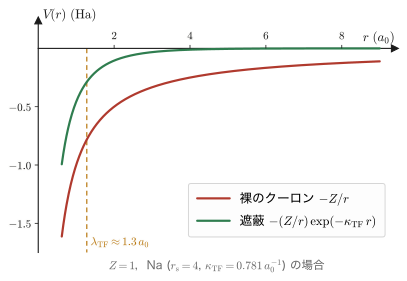
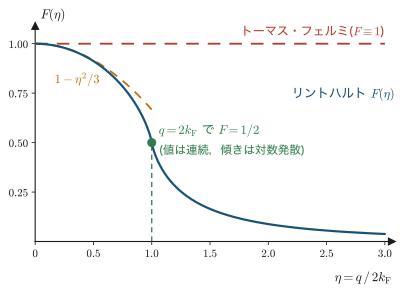
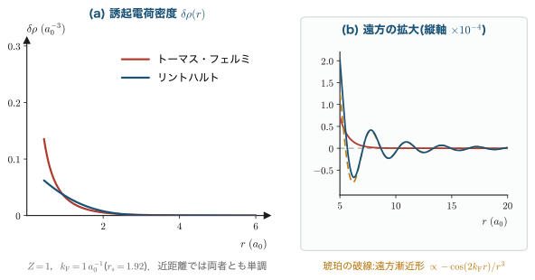
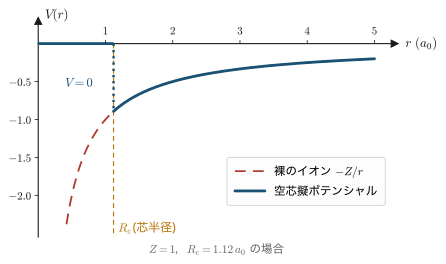
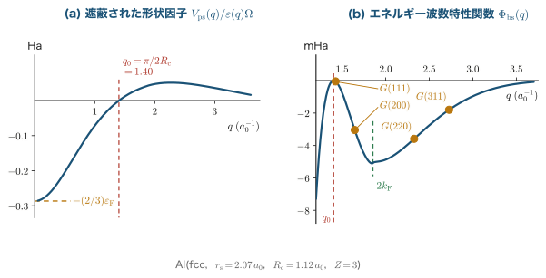
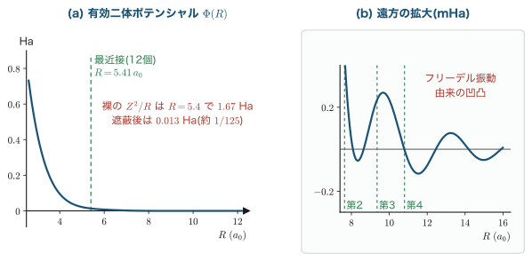

第8章線形応答と遮蔽
第7章では，一様な電子ガス(ジェリウム)の基底状態エネルギーを運動エネルギー・交換エネルギー・相関エネルギーに分けて求めた．しかし現実の物質は一様ではない．金属の中には不純物があり，空孔があり，表面があり，そして何よりイオン(原子核+内殻電子)が周期的に並んでいる．これらはすべて，一様な電子の海に加えられた「摂動」と見ることができる．摂動が弱ければ，電子ガスの応答は摂動の1次に比例するはずである——これが線形応答の考え方である．本章では，点電荷を金属に埋め込んだときに周囲の電子がどう配置換えをして電荷を隠すか(遮蔽)を，2つの水準で計算する．第一はトーマス・フェルミ近似(第4章)を線形化した粗い扱いで，湯川型の指数減衰した遮蔽ポテンシャルを与える．第二はフェルミ球の情報を捨てずに1次摂動論を実行するリントハルト関数で，これは $q=2k_F$ に弱い特異性を持ち，実空間に $\cos(2k_F r)/r^3$ という長距離の振動(フリーデル振動)を生む．実験(金属NMRのナイトシフト，STM像，フォノン分散のコーン異常)が支持するのは後者である．章の終わりでは，この線形応答の道具立てを擬ポテンシャルと組み合わせ，Na・Mg・Al のようなsp価電子金属の平衡体積と結晶構造を，驚くほど少ない仮定から説明してみせる．第9章から始まる厳密な密度汎関数理論の前に，「密度の変化とポテンシャルの変化を結びつける」という視点を身につけておきたい．
- 応答関数 $\chi(q)$ と誘電関数 $\varepsilon(q)$ の定義，両者を結ぶ関係 $\varepsilon(q)=1-(4\pi/q^2)\chi(q)$ の導出とRPAの意味
- トーマス・フェルミ方程式の線形化から $\chi_{\mathrm{TF}}=-D(\varepsilon_F)$ を導き，逆フーリエ変換を完全に実行して湯川型遮蔽ポテンシャル $-\left(Z/r\right)e^{-\kappa_{\mathrm{TF}}r}$ と完全遮蔽則を得ること
- ナイトシフトの実験がトーマス・フェルミ描像を否定すること，そして何が足りなかったのか
- 1次摂動論からリントハルト関数 $\chi(q)=\chi_{\mathrm{TF}}F(\eta)$ を，角度積分・動径積分まで省略せずに導出すること
- $q=2k_F$ の対数特異性がフェルミ面の幾何に由来すること，そしてそれが実空間のフリーデル振動 $\cos(2k_Fr)/r^3$ を生む仕組み
- アシュクロフトの空芯擬ポテンシャルと2次摂動論による全エネルギーの4項分解，バンド構造エネルギーと結晶構造の選択
本章の単位系についての注意
本章でも第1章で導入したハートリー原子単位系($\hbar=m_e=e=4\pi\varepsilon_0=1$)を基本とする．この単位系では電子2個のクーロン相互作用エネルギーは $1/r$，運動エネルギー演算子は $-\tfrac{1}{2}\nabla^2$，自由電子のエネルギーは $\varepsilon_k=k^2/2$ である．長さの単位はボーア半径 $a_0=0.5292\,\text{Å}$，エネルギーの単位はハートリー($1\,\mathrm{Ha}=27.211\,\mathrm{eV}$)．
ただし，遮蔽と擬ポテンシャルの文献では歴史的にリュードベリ単位系(Ry)がよく使われる．Ry単位系は $\hbar^2/2m_e=1$，$e^2=2$ と取るもので，自由電子のエネルギーが $\varepsilon_k=k^2$，クーロン相互作用が $2/r$ という形になる．換算は
$$1\,\mathrm{Ha} = 2\,\mathrm{Ry} = 27.211\,\mathrm{eV}$$である．本章では主要なエネルギーの結果を Ha と Ry の両方で書く．長さと波数(遮蔽長 $\lambda_{\mathrm{TF}}$，遮蔽波数 $\kappa_{\mathrm{TF}}$，フェルミ波数 $k_F$)は単位系の選び方に依存しない物理量なので，併記の必要はない．
また，ガウス単位系で $e^2$ を陽に残した式も要所で添える．原子単位の式でガウス単位に戻したいときの規則は単純で，クーロン相互作用が現れるところに $e^2$ を1つ補うだけでよい．たとえば $\kappa_{\mathrm{TF}}^2=4\pi D(\varepsilon_F)$(原子単位)はガウス単位では $\kappa_{\mathrm{TF}}^2=4\pi e^2 D(\varepsilon_F)$ となる．
8.1 問題設定:金属に電荷を1個放り込む
この節では本章全体の問題を設定する．まず具体的な思考実験から入り，次に「線形応答」という枠組みが何を意味するかを定式化し，最後にこの枠組みが物性物理のどれだけ広い範囲を覆っているかを見る．
8.1.1 思考実験:金属中の不純物電荷
一様な電子ガス(密度 $\rho_0$)の中に，原点に電荷 $+Z$ の点電荷をそっと置いたとしよう．真空中であれば，この点電荷は距離 $r$ の場所に $-Z/r$ という(電子にとっての)ポテンシャルエネルギーを作る．これは $1/r$ でしか減衰しない，非常に長距離の相互作用である．
しかし金属の中ではそうならない．正電荷に引き寄せられて電子が集まってくるからである．集まった電子は負電荷であるから，外から見ると点電荷 $+Z$ の一部を打ち消す．十分遠方から見れば，正電荷と，それを取り囲む電子雲の負電荷が完全に相殺し，電荷はまったく見えなくなる——これが遮蔽(screening)である．
ここで問うべきことが2つある．
- どれくらいの距離で隠れるのか．遮蔽の効く長さスケール(遮蔽長)はいくらか．
- どういう形で隠れるのか．ポテンシャルは単調に減衰するのか，それとも別の振る舞いをするのか．
1つ目の問いには，あとで見るように「金属では $1\,\text{Å}$ 程度，つまり原子間距離より短い」という答えが返ってくる．これは金属の性質を理解するうえで決定的に重要である．金属中のイオンの電荷が互いによく遮蔽されているからこそ，伝導電子は「ほとんど自由な電子」として振る舞い，単純金属のバンド構造が自由電子のそれに近くなる(第12章)．2つ目の問いこそが本章の主題であり，その答えが本章の前半(トーマス・フェルミ)と後半(リントハルト)で劇的に変わる．
8.1.2 線形応答という枠組み
厳密には，電荷を埋め込んだ系の電子密度を求めるには，その系のシュレーディンガー方程式(あるいは第10章のコーン・シャム方程式)を解かなければならない．それは一般には難しい．しかし摂動が弱いときには，話は劇的に簡単になる．
定義:線形応答
系に弱い外場 $V_{\mathrm{ext}}$ を加えたとき，物理量 $A$ の変化 $\delta A$ が $V_{\mathrm{ext}}$ の1次で書けるとき，これを線形応答という．一般には $\delta A$ は $V_{\mathrm{ext}}$ の汎関数であり，テイラー展開すると
$$\delta A = \int \dd^3 r'\, K(\rr,\rr')\, V_{\mathrm{ext}}(\rr') + O(V_{\mathrm{ext}}^2)$$となる．この1次の係数 $K(\rr,\rr')$ を応答関数と呼ぶ．線形応答理論とは，この $K$ を無摂動系の情報だけから計算する理論である．
ここが線形応答の要点である．応答関数は摂動を受けた系ではなく，摂動を受ける前の系(われわれの場合は一様電子ガス)の性質だけで決まる．一様電子ガスなら第3章・第7章ですでによく調べてある．だから，いったん $K$ さえ計算しておけば，あとはどんな弱い摂動に対しても答えが「積分1つ」で出るのである．
さらに，一様電子ガスには並進対称性という強力な性質がある．無摂動系がどこも同じなら，応答関数は2点の相対位置だけの関数でなければならない:
\begin{equation} K(\rr,\rr') = K(\rr-\rr') \label{eq:8-transl} \end{equation}そして，相対位置だけの関数を含む積分は畳み込み(convolution)であるから，フーリエ変換すると単なる掛け算になる(8.2.2節の数学ノート)．すなわち波数 $\bm{q}$ ごとに独立な問題に分解される．これが，本章の計算がすべて $\bm{q}$ 空間で行われる理由である．
8.1.3 応用の広がり
「金属に点電荷を入れる」という設定は特殊に見えるかもしれないが，線形応答の枠組みが覆う現象はきわめて広い．以下に代表例を挙げる．本章で扱えるのはこのうちの静的(振動数ゼロ)な部分だけだが，考え方はすべて共通である．
- 不純物・空孔・表面．母体の一様性を破るものはすべて摂動である．誘起される電荷分布(フリーデル振動)が本章8.6節の主題．
- 金属NMRのナイトシフト．核スピンが感じる磁場は，伝導電子の接触相互作用を通じて電子密度に敏感である．不純物のまわりで電子密度がどこまで乱されるかが共鳴線の形に直接現れる(8.4節)．
- フォノン異常(コーン異常)．イオン間の有効相互作用は電子ガスによって遮蔽されている．遮蔽が $q=2k_F$ で特異なら，フォノン分散も $q=2k_F$ で折れ曲がる(8.6.9節)．
- 磁性不純物間のRKKY相互作用．局在スピンが伝導電子を分極させ，その分極が別の局在スピンに伝わる．振動する応答関数が，距離に応じて強磁性・反強磁性が交替する交換結合を生む(8.6.8節)．
- 結晶構造の安定性．イオンの作る弱い擬ポテンシャルを摂動とみなすと，2次摂動論のエネルギーが結晶構造を選ぶ(8.7節)．
- 誘電応答・光学応答．外部電場に対する応答が誘電関数であり，その振動数依存性が屈折率・吸収スペクトルを与える(第18章)．
- 数値計算の収束．自己無撞着場(SCF)計算で電荷密度を更新するとき，系の応答関数が事実上の「利得」を決める．長波長で応答が発散的だと反復が振動する(第14章の charge sloshing)．
これらに共通する構造は「外から何かを加える → 電子が応答する → 応答が元の外場を弱める(あるいは変形する)」というフィードバックである．次節ではこのフィードバックを式にする．
8.2 応答関数と誘電関数
これから，外部ポテンシャル・誘起電荷・誘起ポテンシャル・全ポテンシャルという4つの量の関係を整理し，応答関数 $\chi(q)$ と誘電関数 $\varepsilon(q)$ を定義して，両者を結ぶ関係式を導く．この節の結論は式 \eqref{eq:8-eps-chi} 一つであるが，そこに至る途中の「どのポテンシャルに対する応答か」という区別が，初学者が最もつまずくところなので丁寧に扱う．
8.2.1 4つの量とその関係
登場人物を定義しよう．すべて電子1個が感じるポテンシャルエネルギーとして定義する(静電ポテンシャル $\phi$ ではないことに注意．電子の電荷は $-e=-1$ なので $V=-\phi$ の関係にある)．
定義:4つの量
- $V_{\mathrm{ext}}(\rr)$:外部ポテンシャル．外から持ち込んだ電荷(不純物，イオン)が電子に及ぼすポテンシャルエネルギー．われわれが指定する量．
- $\delta\rho(\rr)$:誘起電子密度．摂動によって生じた電子数密度の変化 $\rho(\rr)-\rho_0$．
- $\delta V(\rr)$:誘起ポテンシャル．誘起電子密度 $\delta\rho$ が作る静電ポテンシャルエネルギー(ハートリー項の変化)．
- $V(\rr)=V_{\mathrm{ext}}(\rr)+\delta V(\rr)$:全ポテンシャル．電子が実際に感じるポテンシャルエネルギー．遮蔽されたポテンシャルとも呼ぶ．
ここが第一の要点である．電子がどう動くかを決めるのは $V_{\mathrm{ext}}$ ではなく $V$ である．電子は「外から来た電荷」と「先に動いた仲間の電子」を区別できない．したがって応答関数 $\chi$ は全ポテンシャル $V$ に対する応答として定義するのが自然である．
定義:応答関数と誘電関数
一様電子ガスの並進対称性により，フーリエ成分ごとに(以下，フーリエ変換の規約は8.2.2節の数学ノートに従う)
\begin{equation} \delta\rho(\bm{q}) = \chi(q)\, V(\bm{q}) \label{eq:8-chi-def} \end{equation}と書ける．この比例係数 $\chi(q)$ を応答関数(または感受率)と呼ぶ．等方的な電子ガスでは $\chi$ は $\bm{q}$ の向きによらず大きさ $q=|\bm{q}|$ だけの関数である．
一方，外部ポテンシャルと全ポテンシャルの比を
\begin{equation} V(\bm{q}) = \frac{V_{\mathrm{ext}}(\bm{q})}{\varepsilon(q)} \label{eq:8-eps-def} \end{equation}で定義し，$\varepsilon(q)$ を誘電関数と呼ぶ．$\varepsilon(q)>1$ ならば外場は弱められている(遮蔽されている)．
$\chi$ と $\varepsilon$ はどちらも同じ物理を別の角度から見たものであり，両者は独立ではない．両者を結ぶのが，$\delta\rho$ から $\delta V$ を作るポアソン方程式である．
8.2.2 ポアソン方程式のフーリエ変換
数学ノート:フーリエ変換の規約と畳み込み定理
本章では3次元フーリエ変換を次の規約で使う:
\begin{align} \tilde f(\bm{q}) &= \int \dd^3 r\; f(\rr)\, e^{-i\bm{q}\cdot\rr} \label{eq:8-ft}\\ f(\rr) &= \frac{1}{(2\pi)^3}\int \dd^3 q\; \tilde f(\bm{q})\, e^{+i\bm{q}\cdot\rr} \label{eq:8-ift} \end{align}つまり $2\pi$ の因子はすべて逆変換側に置く．以後，混乱の恐れがないときは $\tilde f$ のチルダを省いて $f(\bm{q})$ と書く(引数が $\rr$ か $\bm{q}$ かで区別する)．
(1) 微分はかけ算になる．\eqref{eq:8-ift} を $\rr$ で微分すると，指数関数だけが微分されて $\nabla e^{i\bm{q}\cdot\rr}=i\bm{q}\,e^{i\bm{q}\cdot\rr}$ となるから，$\nabla \to i\bm{q}$，したがって
$$\nabla^2 f(\rr) \;\longleftrightarrow\; -q^2 \tilde f(\bm{q}).$$(2) 畳み込みはかけ算になる．$h(\rr)=\int\dd^3r'\, f(\rr-\rr')g(\rr')$ とすると
\begin{align} \tilde h(\bm{q}) &= \int \dd^3 r\int \dd^3 r'\, f(\rr-\rr')g(\rr')e^{-i\bm{q}\cdot\rr} \notag\\ &= \int \dd^3 r\int \dd^3 r'\, f(\rr-\rr')g(\rr')\,e^{-i\bm{q}\cdot(\rr-\rr')}e^{-i\bm{q}\cdot\rr'} \notag\\ &= \int \dd^3 u\, f(\bm{u})e^{-i\bm{q}\cdot\bm{u}} \int \dd^3 r'\, g(\rr')e^{-i\bm{q}\cdot\rr'} = \tilde f(\bm{q})\,\tilde g(\bm{q}) \label{eq:8-conv} \end{align}2行目では指数を $e^{-i\bm q\cdot\rr}=e^{-i\bm q\cdot(\rr-\rr')}e^{-i\bm q\cdot\rr'}$ と分解しただけである．3行目では $\bm{u}=\rr-\rr'$ と変数変換した($\rr'$ を固定して $\rr$ を全空間で走らせれば $\bm{u}$ も全空間を走り，ヤコビアンは1)．これで2重積分が2つの独立な積分の積に分離した．この畳み込み定理のおかげで，線形応答の関係式はすべて $\bm q$ ごとの代数方程式になる．
(3) クーロンポテンシャルのフーリエ変換．のちに何度も使うので，ここで計算しておく．$1/r$ はそのままでは遠方で減衰せず積分が収束しないので，収束因子 $e^{-\alpha r}$($\alpha>0$)を入れて最後に $\alpha\to0^+$ とする(湯川型正則化):
\begin{align} \int \dd^3 r\, \frac{e^{-\alpha r}}{r}e^{-i\bm{q}\cdot\rr} &= \int_0^\infty \!\! r^2\dd r \int_0^\pi \!\!\sin\theta\,\dd\theta \int_0^{2\pi}\!\!\dd\varphi\; \frac{e^{-\alpha r}}{r}\,e^{-iqr\cos\theta} \notag\\ &= 2\pi \int_0^\infty \!\! r\, e^{-\alpha r} \dd r \int_{-1}^{1}\dd u\; e^{-iqru} \label{eq:8-coul1}\\ &= 2\pi \int_0^\infty \!\! r\, e^{-\alpha r}\,\frac{2\sin(qr)}{qr}\,\dd r = \frac{4\pi}{q}\int_0^\infty e^{-\alpha r}\sin(qr)\,\dd r \label{eq:8-coul2}\\ &= \frac{4\pi}{q}\cdot\frac{q}{\alpha^2+q^2} \;\xrightarrow{\;\alpha\to0^+\;}\; \frac{4\pi}{q^2} \label{eq:8-coul3} \end{align}\eqref{eq:8-coul1} では極座標を $\bm q$ を極軸に取って $\bm q\cdot\rr=qr\cos\theta$ とし，$\varphi$ 積分($2\pi$)を済ませ，$u=\cos\theta$ と置換した($\dd u=-\sin\theta\,\dd\theta$ で積分範囲が反転し符号が戻る)．\eqref{eq:8-coul2} では $\int_{-1}^1 e^{-iqru}\dd u = \left[\frac{e^{-iqru}}{-iqr}\right]_{-1}^{1}=\frac{e^{iqr}-e^{-iqr}}{iqr}=\frac{2\sin qr}{qr}$ を用いた．\eqref{eq:8-coul3} の積分は
$$\int_0^\infty e^{-\alpha r}\sin(qr)\dd r = \mathrm{Im}\int_0^\infty e^{-(\alpha-iq)r}\dd r = \mathrm{Im}\,\frac{1}{\alpha-iq}=\mathrm{Im}\,\frac{\alpha+iq}{\alpha^2+q^2}=\frac{q}{\alpha^2+q^2}$$による．結論として
\begin{equation} \frac{1}{r} \;\longleftrightarrow\; \frac{4\pi}{q^2} \label{eq:8-coulft} \end{equation}である．$q\to0$ で発散するのは，クーロン力が長距離力であることの表れである．
準備ができたので，誘起電荷が作る誘起ポテンシャルを求めよう．電子密度が $\delta\rho$ だけ増えたとき，その電荷密度は $-\delta\rho$(電子の電荷は $-1$)である．静電ポテンシャル $\phi$ に対するポアソン方程式は $\nabla^2\phi=-4\pi\rho_{\text{電荷}}$ だから
\begin{equation} \nabla^2 \delta\phi(\rr) = -4\pi\,\bigl(-\delta\rho(\rr)\bigr) = 4\pi\,\delta\rho(\rr). \label{eq:8-poisson1} \end{equation}電子が感じるポテンシャルエネルギーは $\delta V=(-1)\times\delta\phi=-\delta\phi$ であるから，両辺に $-1$ を掛けて
\begin{equation} \nabla^2 \delta V(\rr) = -4\pi\,\delta\rho(\rr). \label{eq:8-poisson2} \end{equation}符号の確認をしておこう．$\delta\rho>0$(電子が集まった)の場所では，他の電子はそこを避けたいはずだから $\delta V>0$ でなければならない．式 \eqref{eq:8-poisson2} は，電子が集まった点で $\delta V$ が上に凸(極大)になることを言っており，確かに整合している．なお \eqref{eq:8-poisson2} は，電子間の相互作用エネルギーが $+1/|\rr-\rr'|$(反発)であること，すなわち
\begin{equation} \delta V(\rr) = \int \dd^3 r'\, \frac{\delta\rho(\rr')}{|\rr-\rr'|} \label{eq:8-hartree} \end{equation}と同じことを言っている(\eqref{eq:8-hartree} に $\nabla^2$ を作用させ，$\nabla^2(1/|\rr-\rr'|)=-4\pi\delta(\rr-\rr')$ を使えば \eqref{eq:8-poisson2} が出る)．両辺をフーリエ変換しよう．左辺は数学ノートの規則(1)から $-q^2\delta V(\bm q)$，あるいは \eqref{eq:8-hartree} が畳み込みであることと \eqref{eq:8-coulft} から直接:
\begin{equation} \delta V(\bm{q}) = \frac{4\pi}{q^2}\,\delta\rho(\bm{q}). \label{eq:8-poissonq} \end{equation}これで4つの量がすべて $\bm q$ ごとの代数関係で結ばれた．
8.2.3 $\varepsilon(q)$ と $\chi(q)$ の関係
いよいよ本節の目標を導く．全ポテンシャルの定義に立ち返り，\eqref{eq:8-poissonq}，\eqref{eq:8-chi-def} を順に代入する．
\begin{align} V(\bm{q}) &= V_{\mathrm{ext}}(\bm{q}) + \delta V(\bm{q}) \label{eq:8-vtot1}\\ &= V_{\mathrm{ext}}(\bm{q}) + \frac{4\pi}{q^2}\,\delta\rho(\bm{q}) \label{eq:8-vtot2}\\ &= V_{\mathrm{ext}}(\bm{q}) + \frac{4\pi}{q^2}\,\chi(q)\,V(\bm{q}) \label{eq:8-vtot3} \end{align}\eqref{eq:8-vtot2} ではポアソン方程式 \eqref{eq:8-poissonq} を，\eqref{eq:8-vtot3} では応答関数の定義 \eqref{eq:8-chi-def} を使った．ここが遮蔽のフィードバックが式に現れる瞬間である:右辺に $V(\bm q)$ 自身が現れている．$V(\bm q)$ について解くと
\begin{align} V(\bm{q})\left[1 - \frac{4\pi}{q^2}\chi(q)\right] &= V_{\mathrm{ext}}(\bm{q}) \label{eq:8-vsolve1}\\ V(\bm{q}) &= \frac{V_{\mathrm{ext}}(\bm{q})}{1-\dfrac{4\pi}{q^2}\chi(q)} \label{eq:8-vsolve2} \end{align}これを誘電関数の定義 \eqref{eq:8-eps-def} と見比べれば，ただちに結論が得られる．
何が得られたか．応答関数さえ計算できれば誘電関数が決まり，\eqref{eq:8-eps-def} によって遮蔽されたポテンシャルが決まる．以後の仕事は「$\chi(q)$ を求めること」の一点に集約された．なお $\chi<0$ である(引力ポテンシャル $V<0$ の場所に電子が集まる $\delta\rho>0$)から，$\varepsilon>1$ となり，確かに外場は弱められる．
8.2.4 RPA:交換相関の応答を無視するということ
ここで一つ，近似が忍び込んでいることを明示しておかねばならない．式 \eqref{eq:8-vtot2} で，誘起密度が作る「追加のポテンシャル」として静電的なハートリー項 $\delta V=(4\pi/q^2)\delta\rho$ だけを数えた．しかし電子は互いに交換・相関効果でも影響し合う．第10章のコーン・シャム描像で言えば，有効ポテンシャルは $V_{\mathrm{eff}}=V_{\mathrm{ext}}+V_H+V_{xc}$ であり，密度が変われば交換相関ポテンシャルも変わる:
\begin{equation} \delta V_{xc}(\bm{q}) = f_{xc}(q)\,\delta\rho(\bm{q}), \qquad f_{xc}(q)\equiv \frac{\delta^2 E_{xc}}{\delta\rho\,\delta\rho}\bigg|_{\rho_0}\ \text{のフーリエ成分} \label{eq:8-fxc} \end{equation}定義:乱雑位相近似(RPA)
誘起密度が作る追加ポテンシャルとしてハートリー項だけを数え，交換相関の応答 $f_{xc}$ を無視する近似を乱雑位相近似(random phase approximation, RPA)という．$f_{xc}$ を含める場合は \eqref{eq:8-eps-chi} が
$$\varepsilon(q) = 1-\left[\frac{4\pi}{q^2}+f_{xc}(q)\right]\chi(q)$$に置き換わる．$f_{xc}$ を近似的に取り込む処方は局所場補正(local field correction)と総称される．
RPAという名前は第7章の高密度極限の摂動論に由来する(和を取る際に位相がランダムに揃わない項が消える，という議論)．本章では以後 RPA を採用する．単純金属の遮蔽長や $2k_F$ 特異性といった本章の主要な結論は，局所場補正を入れても定性的には変わらない．
8.3 トーマス・フェルミ遮蔽
これから，応答関数 $\chi(q)$ を最初の水準——トーマス・フェルミ(TF)近似——で計算する．第4章で導いたTF方程式を一様電子ガスのまわりで線形化するだけの，たいへん短い計算である．そこから遮蔽長を評価し，点電荷まわりのポテンシャルを逆フーリエ変換で完全に求め，遮蔽が「完全」であることを証明する．
8.3.1 トーマス・フェルミ方程式の線形化
第4章で導いたトーマス・フェルミのオイラー方程式を思い出そう．局所密度近似された運動エネルギーの汎関数微分と外部・ハートリーポテンシャルの和が，どこでも一定値(化学ポテンシャル $\mu$)に等しい:
\begin{equation} \frac{1}{2}\left(3\pi^2\right)^{2/3}\rho(\rr)^{2/3} + V(\rr) = \mu \label{eq:8-tf-euler} \end{equation}ここで $V$ は電子が感じる全ポテンシャル(外部+ハートリー)である．第1項は，局所的な密度 $\rho(\rr)$ を持つ一様電子ガスのフェルミエネルギー
\begin{equation} \varepsilon_F(\rho) = \frac{k_F^2}{2}=\frac{1}{2}\left(3\pi^2\rho\right)^{2/3} \label{eq:8-eF} \end{equation}にほかならない($k_F=(3\pi^2\rho)^{1/3}$ は第3章)．したがって \eqref{eq:8-tf-euler} は「局所的なフェルミ準位(局所的な $\varepsilon_F$ にポテンシャルの底の高さ $V$ を足したもの)が系全体で揃う」という条件であり，まさに熱平衡・化学平衡の条件である．この読み方を覚えておくと，以下の線形化の意味がよく分かる．
導出:TF応答関数
摂動がないときは $V=0$，$\rho=\rho_0$(一様)，$\mu=\varepsilon_F^0\equiv\frac{1}{2}(3\pi^2\rho_0)^{2/3}$ である．弱い摂動を加えて
$$\rho(\rr)=\rho_0+\delta\rho(\rr), \qquad V(\rr)=0+\delta V(\rr)\equiv V(\rr)$$となったとしよう($V$ は摂動そのものなので1次の微小量である)．化学ポテンシャル $\mu$ は電子数が保存されているかぎり変わらないので $\mu=\varepsilon_F^0$ のままである．これを \eqref{eq:8-tf-euler} に入れる:
\begin{align} \frac{1}{2}\left(3\pi^2\right)^{2/3}\left(\rho_0+\delta\rho\right)^{2/3} + V &= \varepsilon_F^0 \label{eq:8-lin1}\\ \frac{1}{2}\left(3\pi^2\right)^{2/3}\rho_0^{2/3}\left(1+\frac{\delta\rho}{\rho_0}\right)^{2/3} + V &= \varepsilon_F^0 \label{eq:8-lin2}\\ \varepsilon_F^0\left[1+\frac{2}{3}\frac{\delta\rho}{\rho_0}+O\!\left(\left(\tfrac{\delta\rho}{\rho_0}\right)^2\right)\right] + V &= \varepsilon_F^0 \label{eq:8-lin3} \end{align}\eqref{eq:8-lin2} では $\rho_0^{2/3}$ をくくり出し，\eqref{eq:8-lin3} では二項展開 $(1+x)^{2/3}=1+\tfrac{2}{3}x+O(x^2)$ を用いた($x=\delta\rho/\rho_0\ll1$ を仮定．これが「線形」応答である所以)．$\varepsilon_F^0$ が両辺で相殺し，1次の項だけを残すと
\begin{align} \frac{2}{3}\,\frac{\varepsilon_F^0}{\rho_0}\,\delta\rho + V &= 0 \label{eq:8-lin4}\\ \delta\rho(\rr) &= -\frac{3\rho_0}{2\varepsilon_F^0}\,V(\rr) \label{eq:8-lin5} \end{align}係数 $3\rho_0/2\varepsilon_F^0$ には見覚えがあるはずである．第3章の式 $D(\varepsilon_F)=3N/2\varepsilon_F$ を体積 $V_{\text{系}}$ で割ったもの，すなわち単位体積あたり・スピン込みのフェルミ準位における状態密度である．本章ではこれを $D(\varepsilon_F)$ と書く:
\begin{equation} D(\varepsilon_F) \equiv \frac{3\rho_0}{2\varepsilon_F^0} = \frac{3\rho_0}{k_F^2} = \frac{3}{k_F^2}\cdot\frac{k_F^3}{3\pi^2} = \frac{k_F}{\pi^2} \label{eq:8-dos} \end{equation}ここで $\rho_0=k_F^3/3\pi^2$(第3章)を使った．以上より
\begin{equation} \delta\rho(\rr) = -D(\varepsilon_F)\,V(\rr) \quad\Longrightarrow\quad \chi_{\mathrm{TF}}(q) = -D(\varepsilon_F) = -\frac{k_F}{\pi^2} \label{eq:8-chi-tf} \end{equation}を得る．$\chi_{\mathrm{TF}}$ は$q$ に依存しない定数であることに注意せよ．この一点が，8.4節以降で問題になる．
物理的意味:なぜ状態密度が出てくるのか
式 \eqref{eq:8-chi-tf} は次のように直観的に読める．ある点でポテンシャルが $V$ だけ下がった($V<0$)としよう．フェルミ準位 $\mu$ は系全体で共通だから，その点では「エネルギー $\mu$ 以下の状態」の幅が $|V|$ だけ広がる．エネルギー幅 $|V|$ に入る状態の数は(単位体積あたり)$D(\varepsilon_F)|V|$ 個であり，それだけ電子が余分に詰まる．すなわち $\delta\rho=D(\varepsilon_F)|V|=-D(\varepsilon_F)V$．
つまり遮蔽の強さはフェルミ準位における状態密度で決まる．$D(\varepsilon_F)$ が大きい金属ほど，電子を動かして電荷を隠すのが容易である．逆に $D(\varepsilon_F)=0$ の絶縁体では，この機構による遮蔽は起こらない(絶縁体の遮蔽は別の機構=電子分極による有限の $\varepsilon$ であり，長距離のクーロン則を $1/\varepsilon r$ に弱めるだけで，指数関数的には切らない)．第3章で「$D(\varepsilon_F)$ が金属の物性を支配する」と述べたことの，もう一つの具体例である．
8.3.2 トーマス・フェルミ誘電関数と遮蔽長
\eqref{eq:8-chi-tf} を \eqref{eq:8-eps-chi} に入れるだけで誘電関数が出る:
\begin{align} \varepsilon_{\mathrm{TF}}(q) &= 1 - \frac{4\pi}{q^2}\bigl(-D(\varepsilon_F)\bigr) = 1 + \frac{4\pi D(\varepsilon_F)}{q^2} \label{eq:8-eps-tf1} \end{align}そこで新しい波数 $\kappa_{\mathrm{TF}}$ を
\begin{equation} \kappa_{\mathrm{TF}}^2 \equiv 4\pi D(\varepsilon_F) \qquad\left(\text{ガウス単位: }\kappa_{\mathrm{TF}}^2=4\pi e^2 D(\varepsilon_F)\right) \label{eq:8-kappa-def} \end{equation}で定義すると，誘電関数と応答関数はきわめて簡潔な形になる．
\begin{equation} \varepsilon_{\mathrm{TF}}(q) = 1+\frac{\kappa_{\mathrm{TF}}^2}{q^2}, \qquad \chi_{\mathrm{TF}} = -\frac{\kappa_{\mathrm{TF}}^2}{4\pi} \label{eq:8-eps-tf} \end{equation}$\kappa_{\mathrm{TF}}$ を電子密度で書き下ろしておこう．\eqref{eq:8-dos} を \eqref{eq:8-kappa-def} に代入し，$k_F=(3\pi^2\rho_0)^{1/3}$ を使う:
\begin{align} \kappa_{\mathrm{TF}}^2 &= 4\pi\cdot\frac{k_F}{\pi^2} = \frac{4k_F}{\pi} \label{eq:8-kap1}\\ &= \frac{4}{\pi}\left(3\pi^2\rho_0\right)^{1/3} = \frac{4\cdot 3^{1/3}\pi^{2/3}}{\pi}\rho_0^{1/3} = 4\left(\frac{3\rho_0}{\pi}\right)^{1/3} \label{eq:8-kap2} \end{align}\eqref{eq:8-kap2} の2番目の等号では $(3\pi^2)^{1/3}=3^{1/3}\pi^{2/3}$ と分け，3番目では $\pi^{2/3}/\pi=\pi^{-1/3}$ を使って $3^{1/3}\pi^{-1/3}\rho_0^{1/3}=(3\rho_0/\pi)^{1/3}$ とまとめた．平方根を取れば
\begin{equation} \kappa_{\mathrm{TF}} = 2\left(\frac{3\rho_0}{\pi}\right)^{1/6} \qquad\left(\text{ガウス単位: }\kappa_{\mathrm{TF}}=2\sqrt{\frac{1}{a_0}\left(\frac{3\rho_0}{\pi}\right)^{1/3}}\right) \label{eq:8-kap3} \end{equation}密度パラメータ $r_s$(電子1個あたりの球の半径，$\rho_0=3/4\pi r_s^3$，第3章)で書き直すと，$k_F=(9\pi/4)^{1/3}/r_s=1.9192/r_s$ だから
\begin{align} \kappa_{\mathrm{TF}}^2 &= \frac{4k_F}{\pi}=\frac{4}{\pi}\left(\frac{9\pi}{4}\right)^{1/3}\frac{1}{r_s} \label{eq:8-lam1}\\ \lambda_{\mathrm{TF}} \equiv \frac{1}{\kappa_{\mathrm{TF}}} &= \left[\frac{\pi}{4}\left(\frac{4}{9\pi}\right)^{1/3} r_s\right]^{1/2} = \left(\frac{\pi}{12}\right)^{1/3}\sqrt{r_s} \label{eq:8-lam2} \end{align}\eqref{eq:8-lam2} の最後の等号は，括弧の中身を整理すれば確かめられる．実際
$$\frac{\pi}{4}\left(\frac{4}{9\pi}\right)^{1/3} = \frac{\pi\cdot 4^{1/3}}{4\cdot 9^{1/3}\pi^{1/3}} = \frac{\pi^{2/3}}{4^{2/3}\cdot 9^{1/3}} = \left(\frac{\pi^2}{16\cdot 9}\right)^{1/3} = \left(\frac{\pi^2}{144}\right)^{1/3} = \left(\frac{\pi}{12}\right)^{2/3}$$であり，この $1/2$ 乗が $(\pi/12)^{1/3}$ である．数値では $(\pi/12)^{1/3}=0.6396$ だから，遮蔽長の便利な公式は
$$\lambda_{\mathrm{TF}} = \frac{1}{\kappa_{\mathrm{TF}}} = \left(\frac{\pi}{12}\right)^{1/3}\sqrt{r_s}\;a_0 = 0.6396\,\sqrt{r_s}\;a_0 \qquad (r_s \text{ は } a_0 \text{ 単位})$$例:金属の遮蔽長の数値
いくつかの単純金属について $\lambda_{\mathrm{TF}}$ を評価してみよう．
| 金属 | $r_s$ ($a_0$) | $k_F$ ($a_0^{-1}$) | $\kappa_{\mathrm{TF}}$ ($a_0^{-1}$) | $\lambda_{\mathrm{TF}}$ ($a_0$) | $\lambda_{\mathrm{TF}}$ (Å) |
|---|---|---|---|---|---|
| Na | 3.93 | 0.488 | 0.789 | 1.27 | 0.67 |
| K | 4.86 | 0.395 | 0.709 | 1.41 | 0.75 |
| Mg | 2.66 | 0.721 | 0.958 | 1.04 | 0.55 |
| Al | 2.07 | 0.927 | 1.086 | 0.92 | 0.49 |
いずれも $1\,\text{Å}$ 以下，原子間距離($2\text{–}4\,\text{Å}$)よりはるかに短い．金属中の電荷は最近接原子に届く前にほぼ隠れてしまうのである．以下の議論では，扱いやすい丸い値として Na を $r_s=4$ で代表させ，$\lambda_{\mathrm{TF}}\simeq1.3\,a_0$ を使う．
8.3.3 点電荷まわりの遮蔽ポテンシャル:逆フーリエ変換の完全計算
これから何をするか．電荷 $+Z$ の点電荷を原点に置いたとき，遮蔽された全ポテンシャル $V(\rr)$ を実空間で求める．手順は「外部ポテンシャルをフーリエ変換 → $\varepsilon_{\mathrm{TF}}$ で割る → 逆フーリエ変換」の3段階であり，最後の逆変換を留数定理で完全に実行する．
まず外部ポテンシャルである．電荷 $+Z$ の点電荷が電子(電荷 $-1$)に及ぼすポテンシャルエネルギーは引力で $V_{\mathrm{ext}}(\rr)=-Z/r$ である．\eqref{eq:8-coulft} より
\begin{equation} V_{\mathrm{ext}}(\bm{q}) = -\frac{4\pi Z}{q^2}. \label{eq:8-vext-q} \end{equation}これを \eqref{eq:8-eps-def} で割る:
\begin{align} V(\bm{q}) = \frac{V_{\mathrm{ext}}(\bm{q})}{\varepsilon_{\mathrm{TF}}(q)} = \frac{-4\pi Z/q^2}{1+\kappa_{\mathrm{TF}}^2/q^2} = \frac{-4\pi Z/q^2}{\dfrac{q^2+\kappa_{\mathrm{TF}}^2}{q^2}} = -\frac{4\pi Z}{q^2+\kappa_{\mathrm{TF}}^2} \label{eq:8-vq-tf} \end{align}分母分子に $q^2$ を掛けただけである．ここで起きたことは重要で，$q\to0$ での発散が消えた．裸のクーロンポテンシャルの $4\pi/q^2$ という長距離の尻尾が，遮蔽によって $4\pi/(q^2+\kappa^2)$ という有限の値に化けたのである．$q\to0$(=無限に長い波長=無限に遠く)を見ても発散しない，ということが実空間での指数減衰に対応する．
数学ノート:留数定理とジョルダンの補題
次の逆変換で複素積分を使うので，必要な道具を整理しておく．読者が複素解析を未習でも，以下の2つの事実を認めれば先に進める．
(1) 留数定理．複素平面上の閉曲線 $C$(反時計回り)の内部で，関数 $f(z)$ が有限個の1位の極 $z_1,\dots,z_n$ を除いて正則なら
$$\oint_C f(z)\,\dd z = 2\pi i \sum_{j}\mathrm{Res}_{z=z_j} f(z), \qquad \mathrm{Res}_{z=z_j}f = \lim_{z\to z_j}(z-z_j)f(z)$$1位の極とは $f(z)=g(z)/(z-z_j)$($g$ は $z_j$ で正則，$g(z_j)\neq0$)と書けるところである．
(2) ジョルダンの補題．$r>0$ とし，$f(z)$ が上半平面で $|z|\to\infty$ のとき $|f(z)|\to0$ となるなら，上半平面の大半円 $C_R$($|z|=R$，$R\to\infty$)上で
$$\int_{C_R} f(z)\,e^{izr}\,\dd z \;\longrightarrow\; 0.$$直観的な理由:上半平面では $z=x+iy$($y>0$)に対して $|e^{izr}|=e^{-yr}$ であり，虚部が正の領域で指数関数的に小さくなる．したがって $e^{izr}$ を含む積分は上半平面で閉じるのが定石である($e^{-izr}$ なら下半平面)．
使う積分．$r>0$，$\kappa>0$ に対して
\begin{equation} \int_0^\infty \frac{q\sin(qr)}{q^2+\kappa^2}\,\dd q = \frac{\pi}{2}e^{-\kappa r} \label{eq:8-sinint} \end{equation}を示す．被積分関数は $q\to-q$ で不変(偶関数:分子も分母も偶)だから，区間を $(-\infty,\infty)$ に広げて $1/2$ を掛けてよい．次に $\sin(qr)=\mathrm{Im}\,e^{iqr}$ と書き換える:
$$\int_0^\infty \frac{q\sin qr}{q^2+\kappa^2}\dd q = \frac{1}{2}\,\mathrm{Im}\int_{-\infty}^{\infty}\frac{q\,e^{iqr}}{q^2+\kappa^2}\dd q.$$被積分関数を複素 $q$ 平面に延長すると，極は $q^2+\kappa^2=0$ すなわち $q=\pm i\kappa$ の2つ．$e^{iqr}$ があるのでジョルダンの補題により上半平面で閉じる．囲まれるのは $q=+i\kappa$ のみで，その留数は
$$\mathrm{Res}_{q=i\kappa}\frac{q\,e^{iqr}}{(q-i\kappa)(q+i\kappa)} = \frac{i\kappa\, e^{i(i\kappa)r}}{2i\kappa}=\frac{e^{-\kappa r}}{2}.$$したがって $\displaystyle\int_{-\infty}^{\infty}=2\pi i\cdot\frac{e^{-\kappa r}}{2}=i\pi e^{-\kappa r}$ であり，その虚部の半分を取って $\frac{1}{2}\cdot\pi e^{-\kappa r}$，すなわち \eqref{eq:8-sinint} を得る．
導出:湯川型遮蔽ポテンシャル
\eqref{eq:8-vq-tf} を逆フーリエ変換 \eqref{eq:8-ift} に入れる．極座標を $\rr$ を極軸に取り($\bm q\cdot\rr=qr\cos\theta$)，8.2.2節の数学ノートと同じ手順で角度積分を実行する:
\begin{align} V(\rr) &= \frac{1}{(2\pi)^3}\int \dd^3 q\;\left(-\frac{4\pi Z}{q^2+\kappa_{\mathrm{TF}}^2}\right)e^{i\bm{q}\cdot\rr} \label{eq:8-inv1}\\ &= -\frac{4\pi Z}{(2\pi)^3}\int_0^\infty \!\! q^2\dd q\int_0^\pi\!\!\sin\theta\,\dd\theta\int_0^{2\pi}\!\!\dd\varphi\; \frac{e^{iqr\cos\theta}}{q^2+\kappa_{\mathrm{TF}}^2} \label{eq:8-inv2}\\ &= -\frac{4\pi Z\cdot 2\pi}{(2\pi)^3}\int_0^\infty \frac{q^2}{q^2+\kappa_{\mathrm{TF}}^2}\dd q \int_{-1}^{1}\dd u\; e^{iqru} \label{eq:8-inv3}\\ &= -\frac{8\pi^2 Z}{8\pi^3}\int_0^\infty \frac{q^2}{q^2+\kappa_{\mathrm{TF}}^2}\cdot\frac{2\sin(qr)}{qr}\,\dd q \label{eq:8-inv4}\\ &= -\frac{2Z}{\pi r}\int_0^\infty \frac{q\sin(qr)}{q^2+\kappa_{\mathrm{TF}}^2}\,\dd q \label{eq:8-inv5}\\ &= -\frac{2Z}{\pi r}\cdot\frac{\pi}{2}e^{-\kappa_{\mathrm{TF}}r} \label{eq:8-inv6} \end{align}\eqref{eq:8-inv2} は極座標への書き換え．\eqref{eq:8-inv3} で $\varphi$ 積分($2\pi$)を済ませ，$u=\cos\theta$ と置換した．\eqref{eq:8-inv4} で $\int_{-1}^1 e^{iqru}\dd u=2\sin(qr)/qr$ を代入し，$(2\pi)^3=8\pi^3$ を使った．\eqref{eq:8-inv5} で $q^2/q\cdot 2/(8\pi^3)\times 8\pi^2$ を整理した($8\pi^2 Z\cdot 2/(8\pi^3 r)=2Z/\pi r$)．\eqref{eq:8-inv6} で数学ノートの結果 \eqref{eq:8-sinint} を使った．整理して
\begin{equation} V(r) = -\frac{Z}{r}\,e^{-\kappa_{\mathrm{TF}} r} \label{eq:8-yukawa} \end{equation}を得る．
何が得られたか．裸のクーロンポテンシャル $-Z/r$ が，指数因子 $e^{-\kappa_{\mathrm{TF}}r}$ によって遮蔽長 $\lambda_{\mathrm{TF}}=1/\kappa_{\mathrm{TF}}$ で切られた．この形は湯川ポテンシャル(核力の中間子交換模型で現れる形)と同じであり，遮蔽クーロンポテンシャルとも呼ばれる．$\lambda_{\mathrm{TF}}\simeq 1\,a_0$ という短さを思えば，金属中では点電荷の影響はほぼ最近接原子までしか届かないことになる．

8.3.4 誘起電荷密度と完全遮蔽
これから何をするか．遮蔽ポテンシャルが分かったので，実際に集まった電子の分布 $\delta\rho(r)$ を求め，その総量がちょうど $Z$ になること(完全遮蔽)を証明する．
TF応答関数は $q$ に依らない定数だったから，実空間でもそのまま比例関係 $\delta\rho(\rr)=\chi_{\mathrm{TF}}V(\rr)$ が成り立つ．\eqref{eq:8-eps-tf} と \eqref{eq:8-yukawa} を使って
\begin{align} \delta\rho(r) &= \chi_{\mathrm{TF}}\,V(r) = \left(-\frac{\kappa_{\mathrm{TF}}^2}{4\pi}\right)\left(-\frac{Z}{r}e^{-\kappa_{\mathrm{TF}}r}\right) \label{eq:8-drho1}\\ &= \frac{Z\kappa_{\mathrm{TF}}^2}{4\pi}\,\frac{e^{-\kappa_{\mathrm{TF}}r}}{r} \label{eq:8-drho-tf} \end{align}符号は正しい:正電荷のまわりに電子が余分に集まる($\delta\rho>0$)．
定理:完全遮蔽則
誘起電子が運ぶ電荷の総量は，埋め込んだ点電荷をちょうど打ち消す:
\begin{equation} Q \equiv \int \dd^3 r\; \delta\rho(\rr) = Z \label{eq:8-perfect} \end{equation}証明:完全遮蔽則
(a) TFの場合の直接計算．\eqref{eq:8-drho-tf} を全空間で積分する．$\delta\rho$ が球対称なので $\dd^3r=4\pi r^2\dd r$:
\begin{align} Q &= \int_0^\infty 4\pi r^2\,\frac{Z\kappa_{\mathrm{TF}}^2}{4\pi}\frac{e^{-\kappa_{\mathrm{TF}}r}}{r}\,\dd r \label{eq:8-pf1}\\ &= Z\kappa_{\mathrm{TF}}^2\int_0^\infty r\,e^{-\kappa_{\mathrm{TF}}r}\,\dd r \label{eq:8-pf2}\\ &= Z\kappa_{\mathrm{TF}}^2\cdot\frac{1}{\kappa_{\mathrm{TF}}^2} = Z \label{eq:8-pf3} \end{align}\eqref{eq:8-pf1} → \eqref{eq:8-pf2} では $4\pi r^2\cdot\frac{1}{4\pi r}=r$ と約分した．\eqref{eq:8-pf3} では公式 $\int_0^\infty r e^{-ar}\dd r=1/a^2$ を使った(部分積分1回:$\int_0^\infty re^{-ar}\dd r=\left[-\frac{r}{a}e^{-ar}\right]_0^\infty+\frac{1}{a}\int_0^\infty e^{-ar}\dd r=0+\frac{1}{a^2}$．境界項は $r\to\infty$ で指数が勝って $0$，$r=0$ でも $r$ の因子で $0$)．
(b) 一般の場合($q\to0$ 極限から)．実はこの結果はTF特有ではない．フーリエ変換の定義 \eqref{eq:8-ft} で $\bm q\to0$ とすると $e^{-i\bm q\cdot\rr}\to1$ だから
$$Q = \int\dd^3 r\,\delta\rho(\rr) = \lim_{q\to0}\delta\rho(\bm{q}).$$一方 $\delta\rho(\bm q)=\chi(q)V(\bm q)=\chi(q)V_{\mathrm{ext}}(\bm q)/\varepsilon(q)$ である．\eqref{eq:8-eps-chi} より $\chi=\frac{q^2}{4\pi}(1-\varepsilon)$ を代入すると
\begin{equation} \delta\rho(\bm{q}) = \frac{q^2}{4\pi}\frac{1-\varepsilon(q)}{\varepsilon(q)}\cdot\left(-\frac{4\pi Z}{q^2}\right) = Z\left(1-\frac{1}{\varepsilon(q)}\right) \label{eq:8-drho-gen} \end{equation}$q^2$ と $4\pi$ がきれいに相殺した．したがって
$$Q = Z\lim_{q\to0}\left(1-\frac{1}{\varepsilon(q)}\right) = Z$$である．最後の等号は $\varepsilon(q)\to\infty$($q\to0$)を使った．TFなら $\varepsilon_{\mathrm{TF}}=1+\kappa^2/q^2\to\infty$，後に見るリントハルトでも $\varepsilon\to1+\kappa^2/q^2$ となるので同じである．金属で誘電関数が $q\to0$ で発散すること——これが完全遮蔽の本質であり，$\varepsilon$ が有限値に留まる絶縁体との決定的な違いである．∎
なお \eqref{eq:8-drho-gen} は次節以降で繰り返し使う重要な関係である．実空間に戻せば
\begin{equation} \delta\rho(\rr) = \frac{Z}{(2\pi)^3}\int \dd^3 q\left(1-\frac{1}{\varepsilon(q)}\right)e^{i\bm{q}\cdot\rr} \label{eq:8-drho-int} \end{equation}となる．誘電関数さえ分かれば，誘起電荷分布はこの積分1つで決まる．
物理的意味:トーマス・フェルミ描像の主張
この節の結論をまとめると，TF理論は次のように主張している．
- 金属中の点電荷は，$\lambda_{\mathrm{TF}}\sim1\,a_0$ という原子間距離より短い長さで完全に遮蔽される．
- 誘起電荷分布は $e^{-\kappa r}/r$ という単調減少の形で，符号は変わらない．
- したがって，不純物から $2\text{–}3$ 原子分も離れれば，そこにある原子は不純物の存在をまったく感じない．
第3の主張は実験的に検証可能である．次節でそれを行い，TFが破綻していることを見る．
8.4 実験からの反証:金属NMRのナイトシフト
理論の値打ちは実験に照らして初めて決まる．この節では，金属の核磁気共鳴(NMR)という一見遠い分野の実験が，前節のトーマス・フェルミ描像を真正面から否定することを見る．まずナイトシフトという現象を説明し，次にそれが遮蔽の何を測っているのかを明らかにし，最後に希薄合金の実験結果とTFの予言を突き合わせる．
8.4.1 ナイトシフトとは何か
核磁気共鳴では，スピン $I$ を持つ原子核を静磁場 $H_0$ の中に置き，ゼーマン分裂した核スピン準位間の遷移を電磁波で観測する．共鳴周波数は
\begin{equation} \omega = \gamma_n H_{\text{核の位置}} \label{eq:8-nmr} \end{equation}($\gamma_n$ は核磁気回転比)で与えられる．ここで肝心なのは，核が感じるのは外部磁場 $H_0$ そのものではなく，その位置での実効磁場だという点である．
金属では，伝導電子が核の位置に有限の存在確率を持つ(特に $s$ 的な性格の波動関数は核の位置で節を持たない)．外部磁場 $H_0$ はパウリ常磁性を通じて伝導電子スピンをわずかに分極させ，その分極した電子スピンが核の位置に追加の磁場を作る．電子と核のスピン間の相互作用のうち，核の位置で効くのはフェルミ接触相互作用
\begin{equation} \hat{H}_{\text{接触}} = \frac{8\pi}{3}\,\gamma_e\gamma_n\hbar^2\, \hat{\bm{I}}\cdot\hat{\bm{S}}\;\delta(\rr_e-\rr_n) \label{eq:8-contact} \end{equation}である．デルタ関数が示すとおり，これは電子が核の位置にいるときだけ働く．したがって核が感じる実効磁場のずれは，フェルミ準位近傍の電子波動関数の核位置での存在確率 $|\psi(0)|^2$ とスピン磁化率 $\chi_P$ の積に比例する:
\begin{equation} K \equiv \frac{\Delta\omega}{\omega} \propto \left\langle |\psi_{\kk}(\bm{0})|^2 \right\rangle_{\varepsilon_F}\,\chi_P \label{eq:8-knight} \end{equation}この相対的な共鳴周波数のずれ $K$ をナイトシフト(Knight shift)という．同じ核種でも，絶縁体化合物の中と金属の中とでは共鳴周波数が $0.1\text{–}1\,\%$ ほど違う．この差が伝導電子の存在の直接的な証拠である．
物理的意味:ナイトシフトは何を測る「物差し」か
式 \eqref{eq:8-knight} で本質的なのは，$K$ が核の位置における伝導電子の状態に敏感だという点である．したがって，ある原子核のまわりで電子密度や電子状態が母体金属と違えば，その核のナイトシフトは他と違う値を取る．
ここに，遮蔽を測る実験の設計図がある．金属に少量の不純物を溶かし，母体金属の核のNMR線を見ればよい．不純物の影響が及ぶ範囲にある核はナイトシフトがずれ，及ばない範囲の核は元のままである．線の形(1本の鋭い線か，幅広い分布か)が，摂動がどこまで届いているかを教えてくれる．ナイトシフトは，原子スケールの分解能を持つ「遮蔽の物差し」なのである．
8.4.2 トーマス・フェルミ描像の予言
この実験に対してTF理論が何を予言するかを，具体的な数値で押さえておこう．母体として銀(Ag，fcc，格子定数 $a=4.086\,\text{Å}=7.72\,a_0$)を取る．Ag は1原子あたり価電子1個なので，原子あたりの体積は $a^3/4=115.1\,a_0^3$，密度パラメータは
\begin{equation} r_s = \left(\frac{3\times115.1}{4\pi}\right)^{1/3} = 3.02\,a_0 \label{eq:8-ag-rs} \end{equation}である．したがって \eqref{eq:8-lam2} から
$$\lambda_{\mathrm{TF}}^{\mathrm{Ag}} = 0.6396\sqrt{3.02} = 1.11\,a_0 = 0.59\,\text{Å}.$$一方，fcc の最近接距離は $a/\sqrt{2}=5.46\,a_0$，第2近接は $a=7.72\,a_0$，第3近接は $a\sqrt{3/2}=9.46\,a_0$ である．TFの遮蔽ポテンシャル \eqref{eq:8-yukawa} に含まれる指数因子を評価すると
| 近接殻 | 距離 $R$ ($a_0$) | 配位数 | $e^{-R/\lambda_{\mathrm{TF}}}$ |
|---|---|---|---|
| 第1 | 5.46 | 12 | $7.4\times10^{-3}$ |
| 第2 | 7.72 | 6 | $9.7\times10^{-4}$ |
| 第3 | 9.46 | 24 | $2.0\times10^{-4}$ |
| 第4 | 10.92 | 12 | $5.5\times10^{-5}$ |
TF描像に従えば，最近接の Ag 核ですら不純物ポテンシャルを $1\%$ 以下しか感じない．第2近接以遠は事実上ゼロである．したがってTFの予言は明快である:
TF描像の予言
希薄合金(不純物濃度 $c\ll1$)の母体核のNMRスペクトルは，
- 大多数($1-13c$ 程度)の核は不純物からの影響をまったく受けず，純金属と同じ位置に鋭い1本の線を与える;
- 不純物に最近接する少数の核だけが，ごくわずかにずれた弱い衛星線を作るかもしれない;
- したがって主線の幅は不純物を入れてもほとんど変わらない．
8.4.3 実験結果と結論
実際に行われた実験(希薄な Cd を含む Ag 合金における $^{107}$Ag・$^{109}$Ag の共鳴)の結果はこれと著しく異なる．数原子パーセントの Cd を加えるだけで，
- 共鳴線は大きく広がり，線幅は不純物濃度にほぼ比例して増大する;
- 線の中心位置(平均のナイトシフト)も系統的にずれる;
- 広がりの大きさから逆算すると，不純物から10近接殻以上離れた核まで測定可能な摂動を受けていることになる．
つまり，不純物の影響は $0.6\,\text{Å}$ どころか $10\,\text{Å}$ を超えて届いている．トーマス・フェルミ模型の遮蔽は実験と整合しない．
8.4.4 TFの何が悪かったのか
破綻の原因は，実は8.3.1節の結論の中にはっきり書いてある．TF応答関数は
$$\chi_{\mathrm{TF}}(q) = -D(\varepsilon_F) = \text{定数}$$であった．$q$ に依存しない——これが致命傷である．理由は2つの角度から説明できる．
(i) 実空間の見方．$\chi$ が $q$ に依らない定数だということは，実空間では
$$\delta\rho(\rr) = \chi_{\mathrm{TF}} V(\rr)$$というその場限りの(局所的な)関係を意味する．一般には応答は非局所的で $\delta\rho(\rr)=\int\dd^3r'\,\chi(\rr-\rr')V(\rr')$ の形を持つ．$\chi(q)=$ 定数はそのフーリエ変換が $\chi(\rr-\rr')\propto\delta(\rr-\rr')$，すなわちある点の密度変化はその点のポテンシャルだけで決まるという極端な仮定である．しかし電子は波であり，フェルミ波長 $2\pi/k_F\sim10\,a_0$ 程度の広がりを持って動く．TFはこの波動性を完全に捨てている．
(ii) 波数空間の見方(こちらが本質)．TFの導出 \eqref{eq:8-lin1}–\eqref{eq:8-lin5} を見返すと，そこには「フェルミ準位の状態密度」しか出てこない．フェルミ面がどこにあるか，すなわち $k_F$ という特別な波数が存在するという情報が，応答関数からきれいに消えてしまっている．金属で $k_F$ が特別なのは，そこで占有数 $f_\kk$ が $1$ から $0$ へ不連続に飛ぶからである．この「フェルミ面の鋭さ」は $q$ 依存性としてしか応答関数に現れようがない．TFは電子ガスをぼんやりした流体として扱っているので，この鋭さが最初から入っていない．
正しくやるには，電子の波動関数に対して素直に摂動論を実行し，占有・非占有状態の間の遷移を数え上げるほかない．それが次節のリントハルト関数である．
8.5 リントハルト関数の導出
これから何をするか．一様電子ガスに単一波数 $\bm q$ の弱い周期ポテンシャルを加え，1次摂動論で波動関数の変化を求め，そこから電子密度の1次変化を計算して応答関数 $\chi(q)$ を得る．得られた和は $k$ 空間の積分に直して完全に実行でき，閉じた解析形になる．最後に $q\to0$ と $q\to2k_F$ の極限を詳しく調べる．この節が本章の技術的な中心である．
8.5.1 摂動の設定と1次摂動論
無摂動系は箱(体積 $\Omega_{\text{系}}$，周期境界条件)の中の自由電子ガスである．1電子固有状態は平面波
\begin{equation} \psi_{\kk}(\rr) = \frac{1}{\sqrt{\Omega_{\text{系}}}}\,e^{i\kk\cdot\rr}, \qquad \varepsilon_{\kk} = \frac{k^2}{2} \label{eq:8-planewave} \end{equation}で，占有数は $T=0$ で $f_\kk=\theta(k_F-k)$(占有なら1，空なら0)である．ここに単一波数の実数ポテンシャルを加える:
\begin{equation} \delta V(\rr) = V_q\,e^{i\bm{q}\cdot\rr} + V_q^{*}\,e^{-i\bm{q}\cdot\rr} \label{eq:8-pert} \end{equation}2項の和にしたのは $\delta V$ が実数であることを保証するためである($z+z^*=2\,\mathrm{Re}\,z$ は実数)．任意の摂動はこうした単一波数成分の重ね合わせで書けるから，これで一般性を失わない．
数学ノート:1次摂動論の復習
無摂動ハミルトニアン $\hat{H}_0$ の固有状態を $|n\rangle$，固有値を $E_n$ とする($\hat{H}_0|n\rangle=E_n|n\rangle$，$\langle n|m\rangle=\delta_{nm}$)．摂動 $\hat{W}$ を加えたときの固有状態を $|\tilde n\rangle=|n\rangle+|n^{(1)}\rangle+\cdots$ と展開し，$|n^{(1)}\rangle=\sum_{m\ne n}c_m|m\rangle$ と置いてシュレーディンガー方程式の1次の項を取り出すと
$$(\hat{H}_0-E_n)|n^{(1)}\rangle = -(\hat{W}-E_n^{(1)})|n\rangle .$$左から $\langle m|$($m\ne n$)を掛けると左辺は $(E_m-E_n)c_m$，右辺は $-\langle m|\hat{W}|n\rangle$ となるので
\begin{equation} |\tilde n\rangle = |n\rangle + \sum_{m\ne n}\frac{\langle m|\hat{W}|n\rangle}{E_n-E_m}\,|m\rangle + O(W^2) \label{eq:8-pt1} \end{equation}である．分母が $E_n-E_m$(始状態のエネルギー引く中間状態のエネルギー)であることに注意．縮退($E_m=E_n$)している中間状態があると，この式は使えない．本節でもこの点が問題になるので，8.5.3節で改めて扱う．
行列要素を計算しよう．平面波状態の間では
\begin{align} \langle \kk' |\delta V|\kk\rangle &= \frac{1}{\Omega_{\text{系}}}\int \dd^3 r\; e^{-i\kk'\cdot\rr} \left(V_q e^{i\bm{q}\cdot\rr}+V_q^{*}e^{-i\bm{q}\cdot\rr}\right)e^{i\kk\cdot\rr} \label{eq:8-me1}\\ &= \frac{V_q}{\Omega_{\text{系}}}\int \dd^3 r\; e^{i(\kk+\bm{q}-\kk')\cdot\rr} + \frac{V_q^{*}}{\Omega_{\text{系}}}\int \dd^3 r\; e^{i(\kk-\bm{q}-\kk')\cdot\rr} \label{eq:8-me2}\\ &= V_q\,\delta_{\kk',\,\kk+\bm{q}} + V_q^{*}\,\delta_{\kk',\,\kk-\bm{q}} \label{eq:8-me3} \end{align}\eqref{eq:8-me3} では，周期境界条件のもとでの平面波の直交関係 $\frac{1}{\Omega_{\text{系}}}\int\dd^3r\,e^{i\bm{G}\cdot\rr}=\delta_{\bm{G},\bm{0}}$ を使った．周期ポテンシャルは波数を $\pm\bm q$ だけ変える遷移しか起こさない——これが単一波数の摂動を使う最大の利点である．したがって \eqref{eq:8-pt1} の和は2項しか残らない:
\begin{equation} \tilde\psi_{\kk}(\rr) = \frac{1}{\sqrt{\Omega_{\text{系}}}} \left[ e^{i\kk\cdot\rr} + A_{\kk}\,e^{i(\kk+\bm{q})\cdot\rr} + B_{\kk}\,e^{i(\kk-\bm{q})\cdot\rr} \right], \label{eq:8-psi1} \end{equation} \begin{equation} A_{\kk} = \frac{V_q}{\varepsilon_{\kk}-\varepsilon_{\kk+\bm{q}}}, \qquad B_{\kk} = \frac{V_q^{*}}{\varepsilon_{\kk}-\varepsilon_{\kk-\bm{q}}} \label{eq:8-AB} \end{equation}8.5.2 電子密度の1次変化
これから何をするか．摂動された波動関数から電子密度を作り，$V_q$ の1次の項を拾い出す．
電子密度は占有された状態の確率密度の和である(スピン縮重度2を含める):
\begin{equation} \rho(\rr) = 2\sum_{\kk} f_{\kk}\,\bigl|\tilde\psi_{\kk}(\rr)\bigr|^2 \label{eq:8-rho-sum} \end{equation}ここで一つ注意しておく．摂動によって占有数 $f_\kk$ 自体も変わりうるが，その変化は $|V_q|^2$ のオーダー(1次では状態のエネルギーが $\langle\kk|\delta V|\kk\rangle=0$ なので変わらない)であり，いま求めたい1次には効かない．したがって $f_\kk$ は無摂動のままでよい．
\eqref{eq:8-psi1} の絶対値2乗を1次まで展開する:
\begin{align} \bigl|\tilde\psi_{\kk}\bigr|^2 &= \frac{1}{\Omega_{\text{系}}} \Bigl|e^{i\kk\cdot\rr}+A_{\kk}e^{i(\kk+\bm{q})\cdot\rr}+B_{\kk}e^{i(\kk-\bm{q})\cdot\rr}\Bigr|^2 \label{eq:8-abs1}\\ &= \frac{1}{\Omega_{\text{系}}}\Bigl[ 1 + A_{\kk}e^{i\bm{q}\cdot\rr} + A_{\kk}^{*}e^{-i\bm{q}\cdot\rr} + B_{\kk}e^{-i\bm{q}\cdot\rr} + B_{\kk}^{*}e^{i\bm{q}\cdot\rr} \Bigr] + O(V_q^2) \label{eq:8-abs2} \end{align}\eqref{eq:8-abs2} を丁寧に説明する．$|X|^2=XX^*$ を展開すると9項出るが，$A,B$ を2つ含む項は2次なので落とす．残るのは「第1項×第1項$^*$」$=1$，「第1項×第2項$^*$」$=A_\kk^* e^{i\kk\cdot\rr}e^{-i(\kk+\bm q)\cdot\rr}=A_\kk^*e^{-i\bm q\cdot\rr}$，「第2項×第1項$^*$」$=A_\kk e^{i\bm q\cdot\rr}$，および $B$ についての同様の2項である．
$e^{i\bm q\cdot\rr}$ の係数を集めると $A_\kk+B_\kk^*$ である．エネルギーは実数だから \eqref{eq:8-AB} より
\begin{equation} A_{\kk}+B_{\kk}^{*} = \frac{V_q}{\varepsilon_{\kk}-\varepsilon_{\kk+\bm{q}}} + \frac{V_q}{\varepsilon_{\kk}-\varepsilon_{\kk-\bm{q}}} \label{eq:8-AB2} \end{equation}($B_\kk^*$ を取ると $V_q^*$ が $V_q$ に戻る)．したがって密度の1次変化は
\begin{align} \delta\rho(\rr) &= \frac{2}{\Omega_{\text{系}}}\sum_{\kk} f_{\kk} \left[\frac{V_q}{\varepsilon_{\kk}-\varepsilon_{\kk+\bm{q}}} +\frac{V_q}{\varepsilon_{\kk}-\varepsilon_{\kk-\bm{q}}}\right]e^{i\bm{q}\cdot\rr} + \text{c.c.} \label{eq:8-drho-a} \end{align}("c.c." は複素共役．$e^{-i\bm q\cdot\rr}$ の係数がちょうど $e^{+i\bm q\cdot\rr}$ の係数の複素共役になっており，両者の和は実数である．密度が実数であることが保証されている．)
8.5.3 添字の付け替えによる対称化
これから何をするか．\eqref{eq:8-drho-a} の2つの項を，和の変数を取り替えることで1つにまとめる．
第2項に着目し，和の変数を $\kk\to\kk+\bm{q}$ と付け替える(和は全 $\kk$ 空間を走るので，原点をずらしても和の値は変わらない)．すると $f_\kk\to f_{\kk+\bm q}$，$\varepsilon_\kk\to\varepsilon_{\kk+\bm q}$，$\varepsilon_{\kk-\bm q}\to\varepsilon_{\kk}$ となるので
\begin{align} \sum_{\kk}\frac{f_{\kk}}{\varepsilon_{\kk}-\varepsilon_{\kk-\bm{q}}} &= \sum_{\kk}\frac{f_{\kk+\bm{q}}}{\varepsilon_{\kk+\bm{q}}-\varepsilon_{\kk}} = -\sum_{\kk}\frac{f_{\kk+\bm{q}}}{\varepsilon_{\kk}-\varepsilon_{\kk+\bm{q}}} \label{eq:8-shift} \end{align}最後に分母の符号を反転させて全体に $-1$ を出した．これを \eqref{eq:8-drho-a} に戻すと，2つの項が同じ分母を持つ形にまとまる:
\begin{equation} \delta\rho(\rr) = \left[\frac{2}{\Omega_{\text{系}}}\sum_{\kk} \frac{f_{\kk}-f_{\kk+\bm{q}}}{\varepsilon_{\kk}-\varepsilon_{\kk+\bm{q}}}\right] V_q\,e^{i\bm{q}\cdot\rr} + \text{c.c.} \label{eq:8-drho-b} \end{equation}いま摂動 \eqref{eq:8-pert} の $e^{i\bm q\cdot\rr}$ 成分の振幅は $V_q$，密度応答の同じ成分の振幅は角括弧$\times V_q$ である．定義 \eqref{eq:8-chi-def} と見比べれば，角括弧がそのまま応答関数である．
\begin{equation} \chi(q) = \frac{2}{\Omega_{\text{系}}}\sum_{\kk} \frac{f_{\kk}-f_{\kk+\bm{q}}}{\varepsilon_{\kk}-\varepsilon_{\kk+\bm{q}}} = \frac{4}{\Omega_{\text{系}}}\sum_{\kk} \frac{f_{\kk}-f_{\kk+\bm{q}}}{k^2-\abs{\kk+\bm{q}}^2} \label{eq:8-lindhard-sum} \end{equation}2番目の表式は $\varepsilon_\kk=k^2/2$ を代入し，分母の $1/2$ を分子に上げたものである(Ry単位系なら $\varepsilon_k=k^2$ なので因子2が出ず，$\chi=(2/\Omega)\sum_\kk(f_\kk-f_{\kk+\bm q})/(k^2-|\kk+\bm q|^2)$ となる．文献で係数が違って見えることがあるのはこのためである)．
数学ノート:縮退による見かけの発散は本物ではない
摂動論の公式 \eqref{eq:8-pt1} は $\varepsilon_\kk=\varepsilon_{\kk+\bm q}$ のとき破綻する．これは $|\kk|=|\kk+\bm q|$ すなわち $2\kk\cdot\bm q+q^2=0$ を満たす平面上で起こる．しかし対称化した最終形 \eqref{eq:8-lindhard-sum} を見ると，その平面上では分子も同時にゼロになる．エネルギーが等しい2状態は同じ占有数を持つからである($f$ は $\varepsilon$ だけの関数)．実際，$\varepsilon_{\kk+\bm q}\to\varepsilon_\kk$ の極限で
$$\frac{f_{\kk}-f_{\kk+\bm{q}}}{\varepsilon_{\kk}-\varepsilon_{\kk+\bm{q}}} \;\longrightarrow\; \frac{\partial f}{\partial\varepsilon}\bigg|_{\varepsilon_\kk}$$と有限の値(絶対零度ではフェルミ面上のデルタ関数，これは3次元の $\kk$ 積分の中では面積ゼロの集合上の寄与なので問題を起こさない)に収束する．すなわち物理的な発散はない．
ところが次節の計算では，和を2つに割ってそれぞれを別々に評価する．そのとき片方だけを見ると $1/(2\kk\cdot\bm q+q^2)$ という真の極が現れる．これは分割によって生じた見かけの特異点であり，正しい処方はコーシーの主値(極のまわりを対称に $\pm\epsilon$ だけ除いて $\epsilon\to0$)を取ることである．実際，極の近傍で被積分関数は $\propto1/(u-u_0)$ という奇関数の形をしており，主値を取れば極の両側の寄与が相殺して有限になる．以下の計算で対数の引数に絶対値がつくのは，この主値処方の帰結である．
8.5.4 和を積分に直して完全に実行する
これから何をするか．\eqref{eq:8-lindhard-sum} の $\kk$ についての和を積分に直し，角度積分と動径積分を順に実行して閉じた形を得る．
導出:リントハルト関数の閉じた形
ステップ1:和を2つに分ける．
\begin{align} \chi(q) &= \frac{2}{\Omega_{\text{系}}}\left[ \underbrace{\sum_{\kk}\frac{f_{\kk}}{\varepsilon_{\kk}-\varepsilon_{\kk+\bm{q}}}}_{\textstyle S_1} \;-\; \underbrace{\sum_{\kk}\frac{f_{\kk+\bm{q}}}{\varepsilon_{\kk}-\varepsilon_{\kk+\bm{q}}}}_{\textstyle S_2'} \right] \label{eq:8-split} \end{align}ステップ2:$S_2'$ の変数を付け替える．$S_2'$ で $\kk\to\kk-\bm q$ と置くと($\varepsilon_{\kk}\to\varepsilon_{\kk-\bm q}$，$\varepsilon_{\kk+\bm q}\to\varepsilon_{\kk}$)
\begin{equation} S_2' = \sum_{\kk}\frac{f_{\kk}}{\varepsilon_{\kk-\bm{q}}-\varepsilon_{\kk}} \label{eq:8-s2p} \end{equation}エネルギー差を書き下ろす:
$$\varepsilon_{\kk}-\varepsilon_{\kk+\bm{q}} = \frac{k^2-(\kk+\bm{q})^2}{2}=\frac{-2\kk\cdot\bm{q}-q^2}{2}, \qquad \varepsilon_{\kk-\bm{q}}-\varepsilon_{\kk} = \frac{(\kk-\bm{q})^2-k^2}{2}=\frac{-2\kk\cdot\bm{q}+q^2}{2}$$したがって
\begin{equation} S_1 = \sum_{\kk}\frac{2f_{\kk}}{-2\kk\cdot\bm{q}-q^2}, \qquad S_2' = \sum_{\kk}\frac{2f_{\kk}}{-2\kk\cdot\bm{q}+q^2} \label{eq:8-s1s2} \end{equation}ステップ3:$-S_2'$ を $S_1$ と同じ形にする．$S_2'$ の和で $\kk\to-\kk$ と置き換える．占有数は $f_{-\kk}=f_{\kk}$(球対称)なので許される:
\begin{align} -S_2' &= -\sum_{\kk}\frac{2f_{\kk}}{+2\kk\cdot\bm{q}+q^2} = \sum_{\kk}\frac{2f_{\kk}}{-2\kk\cdot\bm{q}-q^2} = S_1 \label{eq:8-s2eq} \end{align}つまり2つの項はまったく同じ寄与を与える．これで
\begin{equation} \chi(q) = \frac{2}{\Omega_{\text{系}}}\cdot 2S_1 = -\frac{8}{\Omega_{\text{系}}}\sum_{\kk}\frac{f_{\kk}}{q^2+2\kk\cdot\bm{q}} \label{eq:8-chi-s1} \end{equation}ステップ4:和を積分に直す．周期境界条件のもとでは $\kk$ 点は密度 $\Omega_{\text{系}}/(2\pi)^3$ で分布するから(第3章)，$\sum_\kk\to\frac{\Omega_{\text{系}}}{(2\pi)^3}\int\dd^3k$ である．$f_\kk$ は $k\lt k_F$ で1，それ以外で0だから積分領域はフェルミ球の内部になる:
\begin{equation} \chi(q) = -\frac{8}{(2\pi)^3}\int_{k\lt k_F}\dd^3 k\;\frac{1}{q^2+2\kk\cdot\bm{q}} \label{eq:8-chi-int} \end{equation}系の体積 $\Omega_{\text{系}}$ が消えたことに注意(応答関数は示強的な量である)．
ステップ5:角度積分．極座標を $\bm q$ を極軸に取ると $\kk\cdot\bm q=kq\cos\theta$．$\varphi$ 積分は $2\pi$，$u=\cos\theta$ と置換して
\begin{align} \chi(q) &= -\frac{8\cdot 2\pi}{(2\pi)^3}\int_0^{k_F}\!\! k^2\,\dd k \int_{-1}^{1}\frac{\dd u}{q^2+2kqu} \label{eq:8-ang1}\\ &= -\frac{2}{\pi^2}\int_0^{k_F}\!\! k^2\,\dd k\; \left[\frac{1}{2kq}\ln\bigl|q^2+2kqu\bigr|\right]_{u=-1}^{u=1} \label{eq:8-ang2}\\ &= -\frac{2}{\pi^2}\int_0^{k_F}\!\! \frac{k}{2q}\, \ln\left|\frac{q^2+2kq}{q^2-2kq}\right|\dd k \label{eq:8-ang3}\\ &= -\frac{1}{\pi^2 q}\int_0^{k_F} k\, \ln\left|\frac{2k+q}{2k-q}\right|\dd k \label{eq:8-ang4} \end{align}\eqref{eq:8-ang1} の前の係数は $8\cdot2\pi/(2\pi)^3=16\pi/8\pi^3=2/\pi^2$．\eqref{eq:8-ang2} では $\int\dd u/(a+bu)=\frac{1}{b}\ln|a+bu|$($b=2kq$)を使った(絶対値は前述の主値処方による)．\eqref{eq:8-ang3} では端点を代入し，$k^2/(2kq)=k/2q$ とした．\eqref{eq:8-ang4} では対数の中の $q$ を約分し($|q^2\pm2kq|=q|q\pm2k|$，$q>0$)，係数 $2/(2\pi^2 q)=1/\pi^2q$ とまとめた．
ステップ6:動径積分．無次元変数 $x=2k/q$ を導入する($k=qx/2$，$\dd k=(q/2)\dd x$)．上端は $x_F=2k_F/q$ である．ここで本章の主役になる無次元波数
\begin{equation} \eta \equiv \frac{q}{2k_F} \qquad\Longrightarrow\qquad x_F=\frac{1}{\eta} \label{eq:8-eta} \end{equation}を定義しておく．代入すると
\begin{align} J &\equiv \int_0^{k_F} k\,\ln\left|\frac{2k+q}{2k-q}\right|\dd k = \int_0^{1/\eta}\frac{qx}{2}\,\ln\left|\frac{qx+q}{qx-q}\right|\frac{q}{2}\,\dd x \label{eq:8-J1}\\ &= \frac{q^2}{4}\int_0^{1/\eta} x\,\ln\left|\frac{1+x}{1-x}\right|\dd x \label{eq:8-J2} \end{align}\eqref{eq:8-J2} では対数の中の $q$ を約分した．残った積分は初等的に実行できる．
数学ノート:$\displaystyle\int_0^a x\ln\left|\frac{1+x}{1-x}\right|\dd x$ の計算
答えは
\begin{equation} \int_0^{a} x\,\ln\left|\frac{1+x}{1-x}\right|\dd x = \frac{a^2-1}{2}\,\ln\left|\frac{1+a}{1-a}\right| + a \label{eq:8-logint} \end{equation}である．導出は部分積分による．$u=\ln\left|\frac{1+x}{1-x}\right|$，$\dd v=x\,\dd x$ と取るが，原始関数として $v=x^2/2$ ではなく $v=(x^2-1)/2$ を選ぶのが賢い(定数だけずらしても $\dd v$ は同じ)．理由はすぐ分かる．$u$ の微分は
$$\frac{\dd u}{\dd x} = \frac{\dd}{\dd x}\left[\ln|1+x|-\ln|1-x|\right] = \frac{1}{1+x}+\frac{1}{1-x} = \frac{2}{1-x^2}$$である．したがって
\begin{align} \int_0^a x\,u\,\dd x &= \left[\frac{x^2-1}{2}\,u\right]_0^a - \int_0^a \frac{x^2-1}{2}\cdot\frac{2}{1-x^2}\,\dd x \notag\\ &= \frac{a^2-1}{2}\ln\left|\frac{1+a}{1-a}\right| - \frac{-1}{2}\cdot 2\int_0^a \dd x \notag\\ &= \frac{a^2-1}{2}\ln\left|\frac{1+a}{1-a}\right| + a \notag \end{align}$v=(x^2-1)/2$ を選んだおかげで $(x^2-1)/(1-x^2)=-1$ と約分し，残りの積分がただの $\int\dd x$ になった．下端 $x=0$ では $u(0)=\ln1=0$ なので境界項は寄与しない．これが \eqref{eq:8-logint} である．なお $a>1$ のときは $x=1$ で被積分関数が対数発散するが，$\ln$ の発散は可積分($\int_0\ln x\,\dd x$ は収束)なので積分自体は有限であり，公式はそのまま成り立つ．
導出(続き):最終形
\eqref{eq:8-logint} を $a=1/\eta$ として \eqref{eq:8-J2} に適用する．まず対数の引数を整理する:
$$\left|\frac{1+1/\eta}{1-1/\eta}\right| = \left|\frac{(\eta+1)/\eta}{(\eta-1)/\eta}\right| = \left|\frac{\eta+1}{\eta-1}\right| = \left|\frac{1+\eta}{1-\eta}\right|$$(分子分母に $\eta$ を掛け，最後に分母分子の符号を同時に変えた)．また $\frac{a^2-1}{2}=\frac{1/\eta^2-1}{2}=\frac{1-\eta^2}{2\eta^2}$ である．したがって
\begin{align} J &= \frac{q^2}{4}\left[\frac{1-\eta^2}{2\eta^2}\ln\left|\frac{1+\eta}{1-\eta}\right| + \frac{1}{\eta}\right] \label{eq:8-J3}\\ &= \frac{q^2}{4\eta}\left[\frac{1-\eta^2}{2\eta}\ln\left|\frac{1+\eta}{1-\eta}\right| + 1\right] \label{eq:8-J4} \end{align}ここで $q=2k_F\eta$ を使うと $q^2/(4\eta)=4k_F^2\eta^2/(4\eta)=k_F^2\eta$ である:
\begin{equation} J = k_F^2\,\eta\left[1+\frac{1-\eta^2}{2\eta}\ln\left|\frac{1+\eta}{1-\eta}\right|\right] \label{eq:8-J5} \end{equation}これを \eqref{eq:8-ang4} に戻す．$q=2k_F\eta$ なので
\begin{align} \chi(q) &= -\frac{J}{\pi^2 q} = -\frac{k_F^2\eta}{\pi^2\cdot 2k_F\eta}\left[1+\frac{1-\eta^2}{2\eta}\ln\left|\frac{1+\eta}{1-\eta}\right|\right] \label{eq:8-fin1}\\ &= -\frac{k_F}{2\pi^2}\left[1+\frac{1-\eta^2}{2\eta}\ln\left|\frac{1+\eta}{1-\eta}\right|\right] \label{eq:8-fin2}\\ &= -\frac{k_F}{\pi^2}\left[\frac{1}{2}+\frac{1-\eta^2}{4\eta}\ln\left|\frac{1+\eta}{1-\eta}\right|\right] \label{eq:8-fin3} \end{align}\eqref{eq:8-fin3} では角括弧の外の $1/2$ を中に入れた．ここで $-k_F/\pi^2$ は式 \eqref{eq:8-chi-tf} でみたトーマス・フェルミの応答関数そのものである．∎
$F(\eta)$ をリントハルト関数と呼ぶ．これを \eqref{eq:8-eps-chi} に代入すれば，リントハルト誘電関数
\begin{equation} \varepsilon_{\mathrm{L}}(q) = 1+\frac{\kappa_{\mathrm{TF}}^2}{q^2}F(\eta) \label{eq:8-eps-lind} \end{equation}が得られる($\chi_{\mathrm{TF}}=-\kappa_{\mathrm{TF}}^2/4\pi$ を使った)．TFの結果 \eqref{eq:8-eps-tf} と較べると，違いは因子 $F(\eta)$ 一つだけである．しかしこの一つの因子が，次節で見るように実空間の振る舞いを根本的に変える．
8.5.5 極限の検討:$\eta\to0$ でTFに帰着すること
まず長波長極限を調べる．$\eta\ll1$ で対数を展開する．テイラー展開 $\ln(1+x)=x-\frac{x^2}{2}+\frac{x^3}{3}-\cdots$ を使うと
\begin{align} \ln\left|\frac{1+\eta}{1-\eta}\right| &= \ln(1+\eta)-\ln(1-\eta) \notag\\ &= \left(\eta-\frac{\eta^2}{2}+\frac{\eta^3}{3}-\cdots\right) -\left(-\eta-\frac{\eta^2}{2}-\frac{\eta^3}{3}-\cdots\right) \notag\\ &= 2\eta+\frac{2\eta^3}{3}+O(\eta^5) \label{eq:8-logexp} \end{align}偶数次の項がきれいに相殺する．これを $F$ に代入すると
\begin{align} F(\eta) &= \frac{1}{2}+\frac{1-\eta^2}{4\eta}\left(2\eta+\frac{2\eta^3}{3}+\cdots\right) \label{eq:8-Fexp1}\\ &= \frac{1}{2}+\frac{1-\eta^2}{4}\left(2+\frac{2\eta^2}{3}+\cdots\right) \label{eq:8-Fexp2}\\ &= \frac{1}{2}+\frac{1}{4}\left(2+\frac{2\eta^2}{3}-2\eta^2+O(\eta^4)\right) \label{eq:8-Fexp3}\\ &= \frac{1}{2}+\frac{1}{2}-\frac{\eta^2}{3}+O(\eta^4) = 1-\frac{\eta^2}{3}+O(\eta^4) \label{eq:8-Fexp4} \end{align}\eqref{eq:8-Fexp2} で $\eta$ を1つ約分し，\eqref{eq:8-Fexp3} で $(1-\eta^2)$ を分配して $\eta^2$ の項をまとめた($\frac{2}{3}\eta^2-2\eta^2=-\frac{4}{3}\eta^2$，これを $1/4$ 倍して $-\eta^2/3$)．すなわち
\begin{equation} F(0)=1, \qquad \chi_{\mathrm{L}}(q\to0) = \chi_{\mathrm{TF}} \label{eq:8-F0} \end{equation}物理的意味:トーマス・フェルミは長波長極限として正当化される
$F(0)=1$ は，トーマス・フェルミ近似が $q\to0$(=非常にゆっくり空間変化するポテンシャル)の極限で厳密になることを意味する．第4章でTF模型を導入したとき「密度がゆっくり変化する場合の近似」と述べたことが，ここで定量的に裏づけられた．
逆に言えば，TFが使えるのは $q\ll 2k_F$，すなわち空間変化の波長が $\pi/k_F$(フェルミ波長の半分，金属で $5\text{–}10\,a_0$)よりずっと長いときに限られる．原子スケールの構造を持つ点電荷の遮蔽は，まさにこの条件を破っている．8.4節の破綻の理由がこれである．
また，遮蔽長の式 $\kappa_{\mathrm{TF}}^2=4\pi D(\varepsilon_F)$ 自体は $q\to0$ の性質なので正しい．$q\to0$ で $\varepsilon_{\mathrm{L}}\to1+\kappa_{\mathrm{TF}}^2/q^2$ となるから，完全遮蔽則 \eqref{eq:8-perfect} もリントハルトで成り立つ．TFが誤るのは遮蔽の「総量」ではなく，その「空間分布の形」なのである．
8.5.6 $q=2k_F$ の特異性
次に $\eta=1$ の近傍を調べる．まず $F$ 自身は連続である:$\eta\to1$ で $\ln|1+\eta|/|1-\eta|\to+\infty$ だが，前の因子 $(1-\eta^2)=(1-\eta)(1+\eta)$ が $0$ に向かうからである．$\delta=\eta-1$ とおいて丁寧に見よう($|\delta|\ll1$):
\begin{align} \frac{1-\eta^2}{4\eta} &= \frac{-(2\delta+\delta^2)}{4(1+\delta)} = -\frac{\delta}{2}+O(\delta^2) \label{eq:8-sing1}\\ \ln\left|\frac{1+\eta}{1-\eta}\right| &= \ln\frac{2+\delta}{|\delta|} = \ln 2 - \ln|\delta| + O(\delta) \label{eq:8-sing2}\\ F(1+\delta) &= \frac{1}{2}+\left(-\frac{\delta}{2}\right)\left(\ln2-\ln|\delta|\right)+O(\delta) = \frac{1}{2}+\frac{\delta}{2}\ln|\delta| + O(\delta) \label{eq:8-sing3} \end{align}$\delta\ln|\delta|\to0$($\delta\to0$)だから $F(1)=1/2$ で連続である．しかし微分は違う．\eqref{eq:8-sing3} を $\delta$ で微分すると $\frac{1}{2}\ln|\delta|+\frac{1}{2}$ が現れ，$\delta\to0$ で対数発散する．厳密な導関数を計算して確かめよう．$L(\eta)\equiv\ln\left|\frac{1+\eta}{1-\eta}\right|$，$L'(\eta)=\frac{2}{1-\eta^2}$ を使い，積の微分則で
\begin{align} \frac{\dd F}{\dd\eta} &= \frac{\dd}{\dd\eta}\left[\frac{1}{4\eta}-\frac{\eta}{4}\right]L(\eta) + \frac{1-\eta^2}{4\eta}L'(\eta) \label{eq:8-dF1}\\ &= \left(-\frac{1}{4\eta^2}-\frac{1}{4}\right)L(\eta) + \frac{1-\eta^2}{4\eta}\cdot\frac{2}{1-\eta^2} \label{eq:8-dF2}\\ &= -\frac{1+\eta^2}{4\eta^2}\,\ln\left|\frac{1+\eta}{1-\eta}\right| + \frac{1}{2\eta} \label{eq:8-dF3} \end{align}\eqref{eq:8-dF1} では $\frac{1-\eta^2}{4\eta}=\frac{1}{4\eta}-\frac{\eta}{4}$ と分けた．\eqref{eq:8-dF2} の第2項では $(1-\eta^2)$ が約分されて $\frac{1}{2\eta}$ という有限値が残る．$\eta\to1$ では第1項の対数が発散するから
\begin{equation} \left.\frac{\dd F}{\dd\eta}\right|_{\eta\to1} \simeq -\frac{1}{2}\ln\frac{2}{|1-\eta|} + \frac{1}{2} \;\longrightarrow\; -\infty \label{eq:8-dF-div} \end{equation}すなわち$F$ は $\eta=1$ で連続だが，そこで接線が垂直になる．数値で確かめると $F'(0.9)=-1.09$，$F'(0.99)=-2.17$，$F'(0.999)=-3.30$ と，10分の1に近づくたびに $\frac{1}{2}\ln10=1.15$ ずつ大きくなる．対数発散である．

8.5.7 $2k_F$ 特異性の幾何学的起源
なぜ $q=2k_F$ が特別なのか．答えはフェルミ球の幾何にある．式 \eqref{eq:8-lindhard-sum} の和で寄与するのは分子 $f_\kk-f_{\kk+\bm q}$ がゼロでない $\kk$，すなわち
- $\kk$ は占有(フェルミ球の内側)，かつ $\kk+\bm q$ は空(フェルミ球の外側);あるいはその逆
という $\kk$ だけである．言い換えると，応答に効くのは「$\bm q$ だけの運動量を受け取って，占有状態から空状態へ飛び移れる電子」だけである．
幾何学的には，半径 $k_F$ の球(占有領域)と，それを $-\bm q$ だけ平行移動した球(=$\kk+\bm q$ が占有領域に入る $\kk$ の集合)を重ねて考えればよい．2つの球が重なる部分では分子がゼロになって寄与しない．応答は三日月形の重ならない部分から来る．
- $q<2k_F$:2球は重なる．三日月の一部は互いに接する境界を持ち，そこでは $|\kk|=|\kk+\bm q|$，すなわちエネルギー差ゼロの遷移が存在する．分母が小さい遷移は応答への寄与が大きい．
- $q=2k_F$:2球はただ1点で接する．接点は，フェルミ面上で $\bm q$ 方向に正反対に位置する2点(対蹠点)を結ぶ場合である．「エネルギー差ゼロで飛べる」という状況がぎりぎり消える瞬間である．
- $q>2k_F$:2球は完全に離れる．エネルギー差ゼロの遷移がまったく存在しなくなり，すべての遷移が有限のエネルギー差を必要とする．
「エネルギー差ゼロの遷移が存在するか否か」が $q=2k_F$ を境に切り替わる．この切り替わりの瞬間に，$\chi(q)$ の $q$ 微分が特異になるのである．フェルミ面が鋭い(占有数が $k_F$ で不連続に跳ぶ)からこそ，この切り替わりが鋭い特異性として現れる．有限温度でフェルミ面がぼやけると，特異性も同じ幅だけ丸められる．
物理的意味:ネスティングという概念
「フェルミ面のある部分を $\bm q$ だけ平行移動すると別の部分にぴったり重なる」という性質をネスティング(nesting)という．自由電子の球面フェルミ面では $q=2k_F$ で対蹠点どうしが接するという最小限のネスティングしかないが，実際の金属では平坦なフェルミ面が向かい合っていることがあり，そのときネスティングはずっと強くなる．
強いネスティングは $\chi(q)$ を $q=\bm{Q}_{\text{nest}}$ で大きく増大させる．$\varepsilon(q)=1-(4\pi/q^2)\chi$ が符号を変える(あるいは応答が発散する)ほどになると，その波数の電荷密度波・スピン密度波が自発的に生じる．1次元金属のパイエルス転移はこの極端な場合である．本章で扱う球面フェルミ面の $2k_F$ 特異性は，こうした一連の現象のもっとも穏やかな形なのである．
8.6 フリーデル振動
これから何をするか．リントハルト誘電関数を使って，点電荷まわりの誘起電荷分布 $\delta\rho(r)$ の遠方での振る舞いを求める．結論を先に述べれば，TFの単調な指数減衰とはまったく異なり，$\cos(2k_Fr)/r^3$ という振動しながらべき乗で減衰する形になる．これがフリーデル振動である．導出の鍵は「フーリエ積分の遠方漸近形は被積分関数の特異点で決まる」という一般原理なので，まずそれを数学ノートで固める．
8.6.1 誘起電荷の積分表示
出発点は8.3.4節で導いた一般式 \eqref{eq:8-drho-int} である．角度積分はすでに何度もやったのと同じ手順で実行できる:
\begin{align} \delta\rho(r) &= \frac{Z}{(2\pi)^3}\int \dd^3 q\left(1-\frac{1}{\varepsilon(q)}\right)e^{i\bm{q}\cdot\rr} \label{eq:8-fri1}\\ &= \frac{Z\cdot2\pi}{(2\pi)^3}\int_0^\infty \!\! q^2\left(1-\frac{1}{\varepsilon(q)}\right)\dd q \int_{-1}^{1}\dd u\;e^{iqru} \label{eq:8-fri2}\\ &= \frac{Z}{4\pi^2}\int_0^\infty q^2\left(1-\frac{1}{\varepsilon(q)}\right)\frac{2\sin(qr)}{qr}\,\dd q \label{eq:8-fri3}\\ &= \frac{Z}{2\pi^2 r}\int_0^\infty g(q)\,\sin(qr)\,\dd q, \qquad g(q)\equiv q\left(1-\frac{1}{\varepsilon(q)}\right) \label{eq:8-fri4} \end{align}\eqref{eq:8-fri2} で極座標に移り $\varphi$ 積分($2\pi$)を済ませ $u=\cos\theta$ と置換，\eqref{eq:8-fri3} で $\int_{-1}^1 e^{iqru}\dd u=2\sin(qr)/(qr)$ を代入し $2\pi/(2\pi)^3=1/4\pi^2$ を使った．\eqref{eq:8-fri4} で $q^2/(qr)\times2=2q/r$ を整理した．
問題は，この1次元積分の $r\to\infty$ での振る舞いを求めることに帰着した．TFの場合には $g_{\mathrm{TF}}(q)=q\kappa^2/(q^2+\kappa^2)$ が実軸上のどこでも滑らか(特異点は複素平面の $q=\pm i\kappa$ にある)で，結果は8.3.4節で見たとおり指数減衰であった．リントハルトでは $g$ が実軸上の $q=2k_F$ に特異性を持つ．これが決定的な違いを生む．
8.6.2 数学ノート:フーリエ積分の遠方漸近は特異点で決まる
数学ノート:滑らかさ と 減衰の速さ の反比例
(1) 直観をつくる1次元の例．波数空間で「鋭い階段」を考える:
$$g(q)=\theta(k_F-|q|)=\begin{cases}1 & |q|\lt k_F\\ 0 & |q|\gt k_F\end{cases}$$この逆フーリエ変換は初等的に計算できる:
$$f(x)=\frac{1}{2\pi}\int_{-k_F}^{k_F}e^{iqx}\dd q =\frac{1}{2\pi}\left[\frac{e^{iqx}}{ix}\right]_{-k_F}^{k_F} =\frac{1}{2\pi}\cdot\frac{2i\sin(k_Fx)}{ix} =\frac{\sin(k_F x)}{\pi x}$$波数空間の不連続が，実空間では「波数 $k_F$ の振動」×「$1/x$ という遅い減衰」を生んだ．振動の波数は特異点の位置 $k_F$ そのもの，減衰のべきは特異性の強さ(この場合は跳び)で決まっている．
(2) 一般則(部分積分による)．$I(x)=\int g(q)e^{iqx}\dd q$ を部分積分すると
$$I(x) = \left[\frac{g(q)e^{iqx}}{ix}\right] - \frac{1}{ix}\int g'(q)e^{iqx}\dd q$$となり，$1/x$ の因子が1つ稼げる．$g$ が何回でも微分できて($C^\infty$)，しかも導関数がすべて可積分なら，この操作を何度でも繰り返せるから，$I(x)$ は $x$ のいかなるべきよりも速く減衰する(たとえばガウス関数のフーリエ変換はガウス関数で，指数的に速く減衰する)．
逆に，$g$ が $q=q_0$ で $n$ 回目の微分から特異になるなら，部分積分は $n$ 回目で止まり，そこから先は $q_0$ 近傍からの寄与が残る．その寄与は必ず $e^{iq_0x}$ という振動因子を伴い，$x^{-n}$ 程度のべきで減衰する．すなわち
波数空間の特異点の位置 → 実空間の振動の波数
波数空間の特異性の強さ → 実空間の減衰のべき
という対応が成り立つ．滑らかさと減衰の速さは，フーリエ変換の両側で反比例するのである．これは不確定性関係の一つの現れと見ることもできる．
(3) われわれの場合．8.5.6節で見たように $F(\eta)$ は $\eta=1$ で連続，1階微分が対数発散，2階微分は $1/(\eta-1)$ で非可積分に発散する．したがって $g(q)$ の $q=2k_F$ での特異性は「1階微分の対数発散」であり，部分積分は2回目で止まる．予想される漸近形は$\cos(2k_Fr)$ で振動し $1/r^2$ 程度で減衰する積分，これに \eqref{eq:8-fri4} の前因子 $1/r$ が掛かって $\delta\rho\sim\cos(2k_Fr)/r^3$ である．以下でこれを定量的に確認する．
8.6.3 特異部分の抽出
これから何をするか．$g(q)$ の $q=2k_F$ 近傍の非解析的な部分を係数まで求める．
まず $g$ を $\chi$ の関数として書き直す．\eqref{eq:8-eps-chi} より $\varepsilon=1-4\pi\chi/q^2$ だから
\begin{align} 1-\frac{1}{\varepsilon} = \frac{\varepsilon-1}{\varepsilon} = \frac{-4\pi\chi/q^2}{1-4\pi\chi/q^2} = \frac{-4\pi\chi}{q^2-4\pi\chi}, \qquad g(q) = \frac{-4\pi q\,\chi}{q^2-4\pi\chi} \label{eq:8-g-chi} \end{align}(2番目の等号は分母分子に $q^2$ を掛けた．)$\chi$ の非解析的な部分は小さいので，$g$ を $\chi$ について1次まで展開すればよい．$q$ を固定して $\chi$ で微分すると，商の微分則から
\begin{align} \frac{\partial g}{\partial\chi} &= \frac{(-4\pi q)(q^2-4\pi\chi) - (-4\pi q\chi)(-4\pi)}{(q^2-4\pi\chi)^2} \label{eq:8-dgdchi1}\\ &= \frac{-4\pi q^3 + 16\pi^2 q\chi - 16\pi^2 q\chi}{(q^2-4\pi\chi)^2} = \frac{-4\pi q^3}{(q^2-4\pi\chi)^2} \label{eq:8-dgdchi2} \end{align}$\chi$ に比例する項がきれいに相殺した．$q=2k_F$ での値を評価しよう．$F(1)=1/2$ だったから
\begin{equation} \chi(2k_F) = \frac{\chi_{\mathrm{TF}}}{2} = -\frac{k_F}{2\pi^2}, \qquad -4\pi\chi(2k_F) = \frac{2k_F}{\pi} = \frac{\kappa_{\mathrm{TF}}^2}{2} \label{eq:8-chi2kf} \end{equation}(最後は $\kappa_{\mathrm{TF}}^2=4k_F/\pi$ \eqref{eq:8-kap1} を使った)．したがって
\begin{equation} \left.\frac{\partial g}{\partial\chi}\right|_{q=2k_F} = \frac{-4\pi (2k_F)^3}{\left(4k_F^2+\tfrac{1}{2}\kappa_{\mathrm{TF}}^2\right)^2} = \frac{-32\pi k_F^3}{\left(4k_F^2+\tfrac{1}{2}\kappa_{\mathrm{TF}}^2\right)^2} \label{eq:8-dgdchi3} \end{equation}次に $\chi$ の非解析部分である．\eqref{eq:8-sing3} より $\delta=\eta-1=(q-2k_F)/2k_F$ として
\begin{align} \chi_{\text{特異}} &= \chi_{\mathrm{TF}}\cdot\frac{\delta}{2}\ln|\delta| = \chi_{\mathrm{TF}}\,\frac{q-2k_F}{4k_F}\Bigl[\ln|q-2k_F|-\ln(2k_F)\Bigr] \label{eq:8-chising1} \end{align}ここで $\ln(2k_F)$ を含む項は $(q-2k_F)$ の1次式であって解析的だから，遠方漸近には効かない(滑らかな部分は前述の一般則により速く減衰する)．非解析的なのは $(q-2k_F)\ln|q-2k_F|$ の項だけで，その係数は
\begin{equation} \frac{\chi_{\mathrm{TF}}}{4k_F} = \frac{-k_F/\pi^2}{4k_F} = -\frac{1}{4\pi^2} \label{eq:8-chising2} \end{equation}である．$k_F$ が消えて純粋な数になったことに注意．以上を合わせると
\begin{align} g_{\text{特異}}(q) &= \left.\frac{\partial g}{\partial\chi}\right|_{2k_F}\times\left(-\frac{1}{4\pi^2}\right)(q-2k_F)\ln|q-2k_F| \notag\\ &= A\,(q-2k_F)\ln|q-2k_F|, \qquad A \equiv \frac{8k_F^3}{\pi\left(4k_F^2+\tfrac{1}{2}\kappa_{\mathrm{TF}}^2\right)^2} \label{eq:8-gsing} \end{align}符号の計算を確かめておく:$(-32\pi k_F^3)\times(-1/4\pi^2)=8k_F^3/\pi$，分母はそのまま．$A>0$ である．
8.6.4 漸近形の評価
数学ノート:$\displaystyle\int_0^\infty t\ln t\,\sin(tr)\,\dd t = -\frac{\pi}{2r^2}$
この積分は $t\to\infty$ で収束しないように見えるが，振動因子のおかげで(アーベル総和，すなわち収束因子 $e^{-\epsilon t}$ を入れて $\epsilon\to0^+$ とする意味で)確定した値を持つ．証明は次のとおり．
ステップ1:べき乗の場合を計算する．ガンマ関数の定義 $\int_0^\infty t^s e^{-\lambda t}\dd t=\Gamma(s+1)/\lambda^{s+1}$($\mathrm{Re}\,\lambda>0$)で $\lambda=\epsilon-ir$ と取り，$\epsilon\to0^+$ とする．$-ir=r\,e^{-i\pi/2}$ だから
$$\lambda^{-(s+1)}\;\longrightarrow\;(-ir)^{-(s+1)} = r^{-(s+1)}e^{+i\pi(s+1)/2}$$したがって
$$\int_0^\infty t^s e^{irt}\dd t = \frac{\Gamma(s+1)}{r^{s+1}}\,e^{i\pi(s+1)/2}$$虚部を取れば($\sin(tr)=\mathrm{Im}\,e^{irt}$)
\begin{equation} M(s)\equiv\int_0^\infty t^s\sin(tr)\,\dd t = \frac{\Gamma(s+1)}{r^{s+1}}\,\sin\frac{\pi(s+1)}{2} \label{eq:8-Ms} \end{equation}ステップ2:$s$ で微分して対数を出す．$\dfrac{\partial}{\partial s}t^s=t^s\ln t$ だから，\eqref{eq:8-Ms} を $s$ で微分して $s=1$ と置けば求める積分になる:
$$\int_0^\infty t\ln t\,\sin(tr)\,\dd t = \left.\frac{\dd M}{\dd s}\right|_{s=1}$$$M(s)=\Gamma(s+1)r^{-(s+1)}\sin\frac{\pi(s+1)}{2}$ を積の微分則で微分すると3項出るが，$s=1$ では $\sin\frac{\pi\cdot2}{2}=\sin\pi=0$ なので，$\sin$ を微分した項だけが生き残る:
\begin{align} \left.\frac{\dd M}{\dd s}\right|_{s=1} &= \Gamma(2)\,r^{-2}\cdot\frac{\pi}{2}\cos\frac{\pi\cdot 2}{2} = 1\cdot\frac{1}{r^2}\cdot\frac{\pi}{2}\cdot(-1) = -\frac{\pi}{2r^2} \label{eq:8-tlnt} \end{align}($\Gamma(2)=1!=1$，$\cos\pi=-1$．)これが求める結果である．
検算(部分積分による別ルート)．$u=t\ln t$，$\dd v=\sin(tr)\dd t$ として部分積分すると，境界項は(振動により)寄与せず
$$\int_0^\infty t\ln t\sin(tr)\dd t = \frac{1}{r}\int_0^\infty(\ln t+1)\cos(tr)\,\dd t = \frac{1}{r}\left(-\frac{\pi}{2r}\right)+0 = -\frac{\pi}{2r^2}$$ここで $\int_0^\infty\cos(tr)\dd t=0$($r>0$，アーベル総和の意味で)と，\eqref{eq:8-Ms} の余弦版を $s=0$ で微分して得られる $\int_0^\infty\ln t\cos(tr)\dd t=-\pi/2r$ を使った．同じ答えである．
導出:フリーデル振動の漸近形
\eqref{eq:8-fri4} の積分に \eqref{eq:8-gsing} の特異部分だけを入れる(滑らかな部分は速く減衰するので $r\to\infty$ では無視できる)．$t=q-2k_F$ と置換すると，積分範囲は $-2k_F$ から $\infty$ になるが，$r\to\infty$ の漸近を支配するのは $t=0$ のごく近傍だけなので，範囲を $(-\infty,\infty)$ に広げてよい:
\begin{align} \int_0^\infty g_{\text{特異}}(q)\sin(qr)\,\dd q &\simeq A\int_{-\infty}^{\infty} t\ln|t|\;\sin\bigl((t+2k_F)r\bigr)\,\dd t \label{eq:8-as1} \end{align}正弦の加法定理で分解する:
$$\sin\bigl((t+2k_F)r\bigr)=\sin(2k_Fr)\cos(tr)+\cos(2k_Fr)\sin(tr)$$ここで対称性による選別が効く．$t\ln|t|$ は $t$ の奇関数($t\to-t$ で符号が変わる;$\ln|t|$ は偶)，$\cos(tr)$ は偶関数だから，その積は奇関数であり，対称区間 $(-\infty,\infty)$ での積分はゼロになる．一方 $\sin(tr)$ は奇関数だから，$t\ln|t|\sin(tr)$ は偶関数で生き残る:
\begin{align} \int_{-\infty}^{\infty} t\ln|t|\sin\bigl((t+2k_F)r\bigr)\dd t &= \cos(2k_Fr)\int_{-\infty}^{\infty} t\ln|t|\,\sin(tr)\,\dd t \label{eq:8-as2}\\ &= \cos(2k_Fr)\cdot 2\int_{0}^{\infty} t\ln t\,\sin(tr)\,\dd t \label{eq:8-as3}\\ &= \cos(2k_Fr)\cdot 2\left(-\frac{\pi}{2r^2}\right) = -\frac{\pi\cos(2k_Fr)}{r^2} \label{eq:8-as4} \end{align}\eqref{eq:8-as3} では偶関数の対称区間積分が片側の2倍であることを，\eqref{eq:8-as4} では数学ノートの結果 \eqref{eq:8-tlnt} を使った．これを \eqref{eq:8-fri4} に戻すと
\begin{align} \delta\rho(r) &\simeq \frac{Z}{2\pi^2 r}\cdot A\cdot\left(-\frac{\pi\cos(2k_Fr)}{r^2}\right) = -\frac{ZA}{2\pi}\,\frac{\cos(2k_Fr)}{r^3} \label{eq:8-as5} \end{align}$A$ を \eqref{eq:8-gsing} から代入すると
\begin{align} \frac{ZA}{2\pi} &= \frac{Z}{2\pi}\cdot\frac{8k_F^3}{\pi\left(4k_F^2+\tfrac{1}{2}\kappa_{\mathrm{TF}}^2\right)^2} = \frac{4Zk_F^3}{\pi^2\left(4k_F^2+\tfrac{1}{2}\kappa_{\mathrm{TF}}^2\right)^2} \label{eq:8-as6} \end{align}分母を $16k_F^4\left(1+\frac{\kappa_{\mathrm{TF}}^2}{8k_F^2}\right)^2$ と書き直せば，より見通しのよい形になる．∎
何が得られたか．誘起電荷は指数関数的には減衰せず，$1/r^3$ というべき乗でしか減衰しない．しかも波長 $\pi/k_F$(波数 $2k_F$)で符号を変えながら振動する．電子が余分に集まった殻と，逆に減った殻が，交互に同心球状に並ぶのである．これをフリーデル振動という．

物理的意味:波数空間の鋭さが実空間の長距離性を生む
本章でもっとも記憶に値する教訓がこれである．フリーデル振動の起源をたどると，
絶対零度でフェルミ面が鋭い(占有数 $f_\kk$ が $k=k_F$ で不連続)
↓
$\chi(q)$ が $q=2k_F$ で非解析的
↓
実空間で $\cos(2k_Fr)/r^3$ という長距離振動
という因果の鎖に行き着く．「実空間の局所的な性質」ではなく「波数空間の鋭さ」が長距離の効果を生んでいるのである．トーマス・フェルミ模型が失敗したのは，まさにこの鋭さを捨てたからだった．
逆の見方も有用である．有限温度ではフェルミ分布が $k_BT$ の幅でぼやけ，$\chi(q)$ の折れ目も丸くなる．丸まった特異性は $r\gtrsim v_F/k_BT$ の遠方で振動を指数的に減衰させる．乱れ(不純物散乱)も同様に，平均自由行程 $\ell$ を超える距離で振動を殺す．フリーデル振動が観測できるのは，低温・清浄な試料に限られるのである．
8.6.5 実験と応用:何が観測されるか
フリーデル振動は理論的な珍品ではなく，いくつもの実験で直接・間接に確認されている．
8.6.6 STMで見える電子定在波
走査トンネル顕微鏡(STM)は表面の局所状態密度を原子分解能で画像化する．金属表面の段差や吸着原子，あるいは人工的に配置した原子の輪(量子囲い)のまわりには，波長 $\pi/k_F$ の同心円状の定在波が観測される．これは表面2次元電子系におけるフリーデル振動そのものであり，フェルミ波数を実空間の画像から直接読み取ることができる．フェルミ面という運動量空間の概念が，実空間の写真に写るという点で，きわめて印象的な実験である．
8.6.7 合金NMRの線幅ふたたび
8.4節に戻ろう．フリーデル振動なら，不純物から $R$ 離れた核が感じる摂動は $\cos(2k_FR)/R^3$ で，指数減衰ではなくべき減衰である．しかも符号が振動するので，殻ごとに摂動の大きさも符号も異なる．したがって多数の近接殻の核がそれぞれ違うナイトシフトを持ち，共鳴線は広がる．これが実験の観測そのものである．1原子あたり $10\text{–}20$ 殻分の核が測定可能なずれを持つことも，$1/R^3$ という緩やかな減衰なら自然に説明できる．
8.6.8 RKKY相互作用
金属中に磁性不純物(局在スピン $\bm{S}_1$)があると，伝導電子は接触相互作用を通じてスピン分極する．この分極も応答関数 $\chi$ で決まるので，やはり $\cos(2k_Fr)/r^3$ で振動する．距離 $R$ にある第2の局在スピン $\bm{S}_2$ はこの分極を感じるので，2つの局在スピンの間に有効的な交換相互作用
\begin{equation} J(R) \;\propto\; \frac{\cos(2k_FR)}{R^3} \qquad (R\to\infty) \label{eq:8-rkky} \end{equation}が生じる．これをRKKY相互作用(Ruderman–Kittel–Kasuya–Yosida)という．符号が距離とともに交替するため，不純物間距離によって強磁性的にも反強磁性的にもなる．希薄磁性合金(Cu 中の Mn など)では不純物間距離がランダムなので，相互作用の符号もランダムになり，スピングラスと呼ばれる特異な磁気状態が生じる．また磁性金属/非磁性金属の多層膜では，非磁性層の厚さを変えると層間結合が強磁性・反強磁性と振動的に切り替わる．これは巨大磁気抵抗(GMR)素子の設計原理そのものである．
8.6.9 コーン異常
次節で詳しく見るように，金属中のイオン間の有効相互作用は伝導電子によって遮蔽されている．遮蔽が $\chi(q)$ を通じて $q=2k_F$ で非解析的なら，イオン間の力の定数もそこで非解析的になり，結果としてフォノンの分散関係 $\omega(\bm q)$ が $|\bm q|=2k_F$ で折れ曲がる．この折れ目をコーン異常という．中性子非弾性散乱でフォノン分散を測ると，単純金属で実際に $2k_F$ に対応する波数に微小な折れ目が見える．これはフェルミ面の形を実験的に決める一つの手段でもある(折れ目が現れる波数の集合がフェルミ面の「差ベクトル」の集合を教えてくれる)．低次元物質で電子格子相互作用が強い場合，コーン異常は $\omega(2k_F)\to0$ という完全な軟化にまで発展し，格子が周期 $\pi/k_F$ で歪んで絶縁体になる(パイエルス転移)．
例:Al における振動の大きさ
Al($r_s=2.07$，$k_F=0.927\,a_0^{-1}$，$\kappa_{\mathrm{TF}}=1.086\,a_0^{-1}$)に $Z=1$ の点電荷を置いたときの \eqref{eq:8-friedel} の係数を評価する．まず
$$\frac{\kappa_{\mathrm{TF}}^2}{8k_F^2}=\frac{1.180}{8\times0.859}=0.172, \qquad \left(1+0.172\right)^2 = 1.373$$したがって振幅は $\dfrac{1}{4\pi^2\times0.927\times1.373}=0.0199$ であり
$$\delta\rho(r) \simeq -0.0199\,\frac{\cos(1.854\,r)}{r^3}\quad[a_0^{-3}]$$となる．振動の波長は $\pi/k_F=3.39\,a_0=1.79\,\text{Å}$，Al の最近接距離 $5.41\,a_0$ の約 $1.6$ 倍である．$r=10\,a_0$ での振幅は $2\times10^{-5}\,a_0^{-3}$ で，平均電子密度 $\rho_0=0.0269\,a_0^{-3}$ の $10^{-3}$ 程度．小さいが，次節で見るようにこの程度の摂動が結晶構造を決めるのに十分なのである．
8.7 sp価電子金属の全エネルギーモデル
ここまでに用意した道具——ジェリウムのエネルギー(第7章)，線形応答関数，遮蔽——を組み合わせると，Na・Mg・Al・Si のようなsp価電子物質の凝集エネルギー・平衡体積・結晶構造を，一貫した枠組みで議論できるようになる．この節ではその模型を組み立て，実際の数値を出してみる．第一原理計算(第10章以降)が「答えを出す」道具だとすれば，この模型は「なぜその答えになるのかを説明する」道具である．
8.7.1 モデルの設定
模型の骨格は次のとおりである．
- 内殻は擬ポテンシャルで置き換える．Na なら $1s^22s^22p^6$ の内殻を凍結し，価電子($3s^1$)から見た有効ポテンシャルだけを残す．内殻近くではこのポテンシャルが弱くなる(擬ポテンシャル;詳しくは第15章)．
- 価電子は一様電子ガス(ジェリウム)から出発する．擬ポテンシャルが弱いので，価電子はほとんど自由電子である．
- 擬ポテンシャルの効果を摂動として扱う．1次の効果は一様な電子ガスに対する静電エネルギー，2次の効果が線形応答で計算できるバンド構造エネルギーである．
- 電荷の中性領域としてウィグナー・ザイツ(WS)球を使う．結晶を各原子の占める多面体(WSセル)に分け，それを同体積の球で置き換える．この球は内部に $+Z$ のイオンと $-Z$ 分の電子を含むので中性であり，外部に電場を作らない．
WS球の半径 $R_{\mathrm{WS}}$ は，原子1個あたりの体積 $\Omega$ を用いて $\Omega=\frac{4\pi}{3}R_{\mathrm{WS}}^3$ で定義される．原子1個が $Z$ 個の価電子を出すから，電子1個あたりの球の半径 $r_s$ とは
\begin{equation} R_{\mathrm{WS}} = Z^{1/3} r_s, \qquad \rho_0 = \frac{Z}{\Omega} = \frac{3}{4\pi r_s^3} \label{eq:8-rws} \end{equation}という関係にある．
8.7.2 アシュクロフトの空芯擬ポテンシャル
擬ポテンシャルの最も単純な模型として，アシュクロフト(N. W. Ashcroft)の空芯(empty core)擬ポテンシャルを使う．
定義:アシュクロフトの空芯擬ポテンシャル
\begin{equation} V_{\mathrm{ps}}(r) = \begin{cases} 0, & r \le R_c\\[4pt] -\dfrac{Z}{r}, & r > R_c \end{cases} \label{eq:8-ashcroft} \end{equation}芯半径 $R_c$ より外では，価数 $Z$ のイオンが作る裸のクーロン引力そのもの．$R_c$ より内では，内殻電子による遮蔽と直交条件による反発が引力を打ち消してしまう，と割り切ってゼロと置く．$R_c$ は元素ごとの1個のパラメータで，フェルミ面の測定やフォノン分散に合わせて決める．

導出:空芯擬ポテンシャルのフーリエ変換
球対称関数のフーリエ変換は，これまで何度も使った角度積分の手順でただちに1次元積分になる:
\begin{align} V_{\mathrm{ps}}(q) &= \int \dd^3 r\; V_{\mathrm{ps}}(r)\,e^{-i\bm{q}\cdot\rr} = 4\pi\int_0^\infty r^2 V_{\mathrm{ps}}(r)\,\frac{\sin(qr)}{qr}\,\dd r \label{eq:8-vpsq1}\\ &= \frac{4\pi}{q}\int_{R_c}^\infty r\left(-\frac{Z}{r}\right)\sin(qr)\,\dd r \label{eq:8-vpsq2}\\ &= -\frac{4\pi Z}{q}\int_{R_c}^\infty \sin(qr)\,\dd r \label{eq:8-vpsq3}\\ &= -\frac{4\pi Z}{q}\left[-\frac{\cos(qr)}{q}\right]_{R_c}^{\infty} = -\frac{4\pi Z}{q^2}\cos(qR_c) \label{eq:8-vpsq4} \end{align}\eqref{eq:8-vpsq1} の2番目の等号は $\int_0^\pi \sin\theta\,e^{-iqr\cos\theta}\dd\theta\cdot 2\pi = 4\pi\sin(qr)/(qr)$．\eqref{eq:8-vpsq2} では $r\le R_c$ で $V_{\mathrm{ps}}=0$ なので積分の下端が $R_c$ になり，$r^2\cdot\frac{1}{qr}=\frac{r}{q}$ とした．\eqref{eq:8-vpsq3} で $r$ が約分．\eqref{eq:8-vpsq4} の上端 $r\to\infty$ は $\cos(qr)$ が振動して確定しないが，8.2.2節と同じく収束因子 $e^{-\alpha r}$ を入れて $\alpha\to0^+$ とすればゼロになる(物理的には，遠方のクーロン尾は背景電荷で中和されるから寄与しない，という事情の反映である)．
裸のクーロンの $-4\pi Z/q^2$ に，芯の効果として $\cos(qR_c)$ という振動する因子が掛かった．この因子は
\begin{equation} q_0 = \frac{\pi}{2R_c} \label{eq:8-q0} \end{equation}で最初の節(ゼロ点)を持ち，それより大きい $q$ では符号が反転する．$q_0$ という特徴的な波数の存在が，8.7.7節で結晶構造の選択を左右することになる．
8.7.3 全エネルギーの4項分解
原子1個あたりの全エネルギーを，次の4項に分ける．
定義:全エネルギーの4項分解(原子1個あたり)
\begin{equation} E = E_0 + E_E + E_2 + E_N \label{eq:8-4terms} \end{equation}- $E_0$:ジェリウム項．密度 $\rho_0$ の一様電子ガスの運動エネルギー+交換+相関エネルギー(第7章)．原子1個は $Z$ 個の電子を出すので $E_0=Z\,\varepsilon_{\text{jel}}(r_s)$．
- $E_E$:静電項．一様な電子密度 $\rho_0$ と擬イオンの相互作用，および一様電子密度どうしのハートリー項．擬ポテンシャルの1次の効果．
- $E_2$:バンド構造エネルギー．擬ポテンシャルの2次の効果．線形応答関数で書ける．
- $E_N$:イオン間反発項(エワルド項)．点イオンどうしのクーロン反発を一様な背景電荷とともに評価したもの．
$E_E$ と $E_N$ はそれぞれ単独ではクーロン力の長距離性のため発散するが，電荷中性のおかげで和は有限である．WS球近似は，この和を評価する最も簡単な処方である．
ジェリウム項は第7章の結果をそのまま使う．高密度展開(Gell-Mann–Brueckner)とウィグナーの補間を組み合わせた標準形は，電子1個あたり
\begin{equation} \varepsilon_{\text{jel}}(r_s) = \underbrace{\frac{2.21}{r_s^2}}_{\text{運動}} \underbrace{-\frac{0.916}{r_s}}_{\text{交換}} \underbrace{+0.0622\ln r_s - 0.094}_{\text{相関}} \quad[\mathrm{Ry}] \label{eq:8-E0-ry} \end{equation}である．ハートリー単位では全体を2で割って
\begin{equation} \varepsilon_{\text{jel}}(r_s) = \frac{1.105}{r_s^2}-\frac{0.4582}{r_s}+0.0311\ln r_s-0.047 \quad[\mathrm{Ha}] \label{eq:8-E0-ha} \end{equation}となる．第1・2項は第3章と第7章で完全に導出した($\frac{3}{10}k_F^2$ と $-\frac{3}{4}(3/\pi)^{1/3}\rho^{1/3}$ を $r_s$ で書き直したもの)．
8.7.4 静電項 $E_E$ の完全計算
これから何をするか．WS球の中で，擬イオンと一様電子密度の静電エネルギーを最後まで計算する．
導出:WS球近似の静電エネルギー
半径 $R_{\mathrm{WS}}$ の球の中心に空芯擬イオンがあり，球内には一様な電子密度 $\rho_0=Z/\Omega$ が詰まっている．球は中性なので，球の外に電場を作らない(ガウスの法則)．したがって異なる球どうしの静電相互作用はゼロであり，静電エネルギーは球1つの内部だけで決まる．
(i) 電子-擬イオン相互作用．電子密度 $\rho_0$ が擬ポテンシャル \eqref{eq:8-ashcroft} の中に置かれたエネルギー:
\begin{align} E_{e\text{-}i} &= \int_{r\lt R_{\mathrm{WS}}} \dd^3 r\; \rho_0\, V_{\mathrm{ps}}(r) = \rho_0\int_{R_c}^{R_{\mathrm{WS}}} 4\pi r^2 \left(-\frac{Z}{r}\right)\dd r \label{eq:8-EE1}\\ &= -4\pi Z\rho_0\int_{R_c}^{R_{\mathrm{WS}}} r\,\dd r = -4\pi Z\rho_0\,\frac{R_{\mathrm{WS}}^2-R_c^2}{2} \label{eq:8-EE2}\\ &= -4\pi Z\cdot\frac{3Z}{4\pi R_{\mathrm{WS}}^3}\cdot\frac{R_{\mathrm{WS}}^2-R_c^2}{2} = -\frac{3Z^2}{2R_{\mathrm{WS}}}\left(1-\frac{R_c^2}{R_{\mathrm{WS}}^2}\right) \label{eq:8-EE3} \end{align}\eqref{eq:8-EE1} で $r\lt R_c$ の領域は $V_{\mathrm{ps}}=0$ なので落ちる．\eqref{eq:8-EE2} で $r^2\cdot\frac{1}{r}=r$ と約分して初等積分．\eqref{eq:8-EE3} で $\rho_0=\frac{3Z}{4\pi R_{\mathrm{WS}}^3}$ を代入した．
(ii) 電子-電子ハートリー項．一様に帯電した半径 $R$ の球(全電荷 $Q$)の自己静電エネルギーは $\frac{3Q^2}{5R}$ である．これは球を薄い殻ごとに積み上げる計算で得られる:半径 $r$ まで積み上がったときの内部電荷は $q(r)=Q(r/R)^3$，次に足す殻の電荷は $\dd q = 3Q r^2 R^{-3}\dd r$，そのときのエネルギー増加は $\frac{q(r)}{r}\dd q$ だから
$$U = \int_0^R \frac{Q r^3/R^3}{r}\cdot\frac{3Qr^2}{R^3}\dd r = \frac{3Q^2}{R^6}\int_0^R r^4\,\dd r = \frac{3Q^2}{R^6}\cdot\frac{R^5}{5}=\frac{3Q^2}{5R}$$電子の総電荷は大きさ $Z$ なので
\begin{equation} E_{e\text{-}e} = \frac{3Z^2}{5R_{\mathrm{WS}}} \label{eq:8-EE4} \end{equation}(電子どうしは反発なので正．)
(iii) 合計．
\begin{align} E_E &= -\frac{3Z^2}{2R_{\mathrm{WS}}}+\frac{3Z^2R_c^2}{2R_{\mathrm{WS}}^3}+\frac{3Z^2}{5R_{\mathrm{WS}}} \label{eq:8-EE5}\\ &= \left(-\frac{3}{2}+\frac{3}{5}\right)\frac{Z^2}{R_{\mathrm{WS}}}+\frac{3Z^2R_c^2}{2R_{\mathrm{WS}}^3} = -\frac{9}{10}\frac{Z^2}{R_{\mathrm{WS}}}+\frac{3}{2}\frac{Z^2R_c^2}{R_{\mathrm{WS}}^3} \label{eq:8-EE6} \end{align}($-\frac{3}{2}+\frac{3}{5}=-\frac{15}{10}+\frac{6}{10}=-\frac{9}{10}$．)∎
物理的意味:マーデルングエネルギーと芯の反発
\eqref{eq:8-EE6} の第1項 $-\frac{9}{10}Z^2/R_{\mathrm{WS}}$ は，点イオンを一様な負電荷の海に埋め込んだときの静電エネルギー(マーデルングエネルギー)である．これは強い引力であり，金属の凝集の主要な源である．実際の結晶で厳密なエワルド和を計算すると，係数 $9/10=0.9000$ は fcc で $0.8959$，bcc で $0.8959$，hcp で $0.8958$ になる．WS球近似は $0.5\%$ 以内で正確であり，しかも結晶構造への依存性がきわめて弱いことが分かる．
第2項 $+\frac{3}{2}Z^2R_c^2/R_{\mathrm{WS}}^3$ は正(反発)で，$R_{\mathrm{WS}}^{-3}$ すなわち体積の逆数で効くから，圧縮に対して強く抵抗する．空芯という「電子が入っても得をしない領域」の存在が，結晶を潰れないように支えているのである．この反発と第1項の引力の釣り合いが，次項で見るように平衡体積をほぼ決めてしまう．
8.7.5 平衡体積の見積もり
これから何をするか．$E_0+E_E$ を $r_s$ の関数として書き，極小を与える $r_s$ を求めて実験値と比べる．
\eqref{eq:8-rws} を使って $R_{\mathrm{WS}}=Z^{1/3}r_s$ を代入する:
\begin{align} E_E &= -\frac{9}{10}\frac{Z^2}{Z^{1/3}r_s}+\frac{3}{2}\frac{Z^2R_c^2}{Z\,r_s^3} = -\frac{9}{10}\frac{Z^{5/3}}{r_s}+\frac{3}{2}\frac{Z R_c^2}{r_s^3} \qquad[\mathrm{Ha}] \label{eq:8-EE-rs} \end{align}したがって原子1個あたりの(バンド構造項を除いた)全エネルギーは
\begin{equation} E(r_s) \simeq Z\left[\frac{1.105}{r_s^2}-\frac{0.4582}{r_s}+0.0311\ln r_s-0.047\right] -\frac{0.9\,Z^{5/3}}{r_s}+\frac{1.5\,ZR_c^2}{r_s^3} \quad[\mathrm{Ha}] \label{eq:8-Ers} \end{equation}Ry 単位なら全体を2倍して $E(r_s)=Z\left[\frac{2.21}{r_s^2}-\frac{0.916}{r_s}+0.0622\ln r_s-0.094\right]-\frac{1.8Z^{5/3}}{r_s}+\frac{3ZR_c^2}{r_s^3}$ である．平衡条件は $\dd E/\dd r_s=0$:
\begin{equation} \frac{\dd E}{\dd r_s} = Z\left[-\frac{2.210}{r_s^3}+\frac{0.4582}{r_s^2}+\frac{0.0311}{r_s}\right] +\frac{0.9Z^{5/3}}{r_s^2}-\frac{4.5ZR_c^2}{r_s^4} = 0 \label{eq:8-dErs} \end{equation}例:Na・Mg・Al の平衡体積
芯半径としてフェルミ面データなどから決められた代表的な値を用い，\eqref{eq:8-dErs} を数値的に解く．
| 金属 | $Z$ | $R_c$ ($a_0$) | 模型の $r_s$ ($a_0$) | 実験の $r_s$ ($a_0$) | 誤差 |
|---|---|---|---|---|---|
| Na | 1 | 1.67 | 3.76 | 3.93 | $-4\%$ |
| Mg | 2 | 1.39 | 2.73 | 2.66 | $+3\%$ |
| Al | 3 | 1.12 | 2.06 | 2.07 | $-0.5\%$ |
1個の調節パラメータ $R_c$ だけで，平衡体積が数パーセント以内に再現される．Na での平衡エネルギーは $E=-0.210\,\mathrm{Ha}=-0.42\,\mathrm{Ry}$，Al では $E=-2.04\,\mathrm{Ha}=-4.08\,\mathrm{Ry}$ である(これは孤立イオンと自由電子から金属を作るエネルギーであり，凝集エネルギーを得るには孤立原子のエネルギーを差し引く必要がある)．
注意．ここではバンド構造エネルギー $E_2$ の体積依存部分を無視した粗い評価であり，$R_c$ も実験に合わせた経験的パラメータである．この計算が示すのは「精密な予言」ではなく，金属の体積がマーデルング引力と空芯反発の競合でほぼ決まるという物理である．実際 \eqref{eq:8-Ers} で $R_c=0$ とすると $E$ は $r_s\to0$ で発散的に下がり，金属は潰れてしまう．
8.7.6 2次摂動論:バンド構造エネルギー
これから何をするか．擬ポテンシャルの2次の効果を，線形応答関数を使って一般的に書き下ろす．
結晶中の全外部ポテンシャルは，各サイト $\bm{R}_i$ に置かれた擬ポテンシャルの和である:
\begin{equation} V_{\mathrm{ext}}(\rr) = \sum_{i=1}^{N} V_{\mathrm{ps}}(\rr-\bm{R}_i) \label{eq:8-Vext-lattice} \end{equation}導出:結合定数積分による2次エネルギー
摂動を強さ $\lambda$ で徐々に入れる:$\hat{H}(\lambda)=\hat{H}_0+\lambda\hat{V}_{\mathrm{ext}}$，$\lambda:0\to1$．ヘルマン・ファインマンの定理(第16章で証明する．要点は，規格化された固有状態について $\frac{\dd E}{\dd\lambda}=\braket{\Psi_\lambda|\partial_\lambda\hat H|\Psi_\lambda}$ が成り立つこと)より
\begin{equation} \frac{\dd E}{\dd\lambda} = \braket{\Psi_\lambda|\hat{V}_{\mathrm{ext}}|\Psi_\lambda} = \int \dd^3 r\;\rho_\lambda(\rr)\,V_{\mathrm{ext}}(\rr) \label{eq:8-hf} \end{equation}線形応答の範囲では，外部ポテンシャル $\lambda V_{\mathrm{ext}}$ に対する密度は
$$\rho_\lambda(\bm{q}) = \rho_0\,\delta_{\bm{q},0}\,\Omega_{\text{系}} + \lambda\,\tilde\chi(q)V_{\mathrm{ext}}(\bm{q}), \qquad \tilde\chi(q)\equiv\frac{\chi(q)}{\varepsilon(q)}$$である($\tilde\chi$ は外部ポテンシャルに対する応答関数で，遮蔽を含む)．これを \eqref{eq:8-hf} に入れて $\lambda$ について $0$ から $1$ まで積分する:
\begin{align} E-E(0) &= \int_0^1\!\!\dd\lambda\left[\rho_0\!\int\!\dd^3 r\,V_{\mathrm{ext}} + \lambda\!\int\!\dd^3 r\,(\tilde\chi\!\ast\!V_{\mathrm{ext}})V_{\mathrm{ext}}\right] \label{eq:8-cc1}\\ &= \underbrace{\rho_0\int \dd^3 r\,V_{\mathrm{ext}}}_{\text{1次}\;=\;E_E \text{の一部}} + \underbrace{\frac{1}{2}\int \dd^3 r\,(\tilde\chi\ast V_{\mathrm{ext}})\,V_{\mathrm{ext}}}_{\textstyle \equiv\, E_2^{\text{全系}}} \label{eq:8-cc2} \end{align}$\int_0^1\lambda\,\dd\lambda=\frac{1}{2}$ という因子が現れたことに注意．これは2次摂動論のエネルギーに必ず付く因子である(「ポテンシャルを掛けながら密度が育っていく」ので，平均すると半分しか効かない)．
畳み込みをフーリエ空間に移す．全系の体積を $V_{\text{tot}}=N\Omega$ とし，周期系に適したフーリエ規約 $f(\rr)=\frac{1}{V_{\text{tot}}}\sum_{\bm q}f(\bm q)e^{i\bm q\cdot\rr}$ を使うと，パーセバルの関係 $\int f g\,\dd^3r=\frac{1}{V_{\text{tot}}}\sum_{\bm q}f(\bm q)g(\bm q)^*$(実関数 $g$)により
\begin{equation} E_2^{\text{全系}} = \frac{1}{2V_{\text{tot}}}\sum_{\bm{q}\neq0}\tilde\chi(q)\,\bigl|V_{\mathrm{ext}}(\bm{q})\bigr|^2 \label{eq:8-E2-1} \end{equation}次に \eqref{eq:8-Vext-lattice} をフーリエ変換する．平行移動 $\rr\to\rr-\bm{R}_i$ は位相因子を生むから
\begin{equation} V_{\mathrm{ext}}(\bm{q}) = \sum_i e^{-i\bm{q}\cdot\bm{R}_i}\,V_{\mathrm{ps}}(q) = N\,S(\bm{q})\,V_{\mathrm{ps}}(q), \qquad S(\bm{q})\equiv\frac{1}{N}\sum_i e^{-i\bm{q}\cdot\bm{R}_i} \label{eq:8-Sq} \end{equation}$S(\bm q)$ を構造因子という．代入して原子1個あたりに直す($E_2=E_2^{\text{全系}}/N$，$V_{\text{tot}}=N\Omega$):
\begin{align} E_2 &= \frac{1}{N}\cdot\frac{N^2}{2N\Omega}\sum_{\bm{q}\neq0}\tilde\chi(q)|S(\bm{q})|^2|V_{\mathrm{ps}}(q)|^2 = \sum_{\bm{q}\neq0}\bigl|S(\bm{q})\bigr|^2\,\Phi_{\mathrm{bs}}(q) \label{eq:8-E2-2} \end{align}ただし
\begin{equation} \Phi_{\mathrm{bs}}(q) \equiv \frac{1}{2\Omega}\,\frac{\chi(q)}{\varepsilon(q)}\,\bigl|V_{\mathrm{ps}}(q)\bigr|^2 \label{eq:8-phibs} \end{equation}と定義した．∎
$\Phi_{\mathrm{bs}}(q)$ をエネルギー波数特性関数(energy-wavenumber characteristic)と呼ぶ．$\chi<0$，$\varepsilon>0$ なので $\Phi_{\mathrm{bs}}<0$ であり，2次摂動のエネルギーは必ず負(安定化)である．これは2次摂動論の一般的性質(基底状態のエネルギーは2次で必ず下がる)と整合している．
物理的意味:役割分担のきれいさ
式 \eqref{eq:8-E2-2} の構造がすばらしいのは，変数が完全に分離していることである．
- $\Phi_{\mathrm{bs}}(q)$ は，電子密度($r_s$)と擬ポテンシャルの形($Z$, $R_c$)だけで決まり，原子がどこに並んでいるかを一切知らない．
- $|S(\bm q)|^2$ は，原子の配置だけで決まり，どんな元素かを一切知らない．
したがって「同じ体積のもとでどの結晶構造が安定か」という問いは，$\Phi_{\mathrm{bs}}(q)$ という固定された曲線に対して，どの構造の $|S(\bm q)|^2$ がより多くの重みを $\Phi_{\mathrm{bs}}$ の谷の位置に置けるか，という幾何学の問題に翻訳される．
8.7.7 構造因子と結晶構造の選択
構造因子 $S(\bm q)=\frac{1}{N}\sum_i e^{-i\bm q\cdot\bm R_i}$ を，単純ブラベー格子(単位胞に原子1個)について評価しよう．格子ベクトル $\bm R_i$ の集合について和を取ると，これは幾何級数の直交性から
\begin{equation} S(\bm{q}) = \begin{cases} 1, & \bm{q}=\bm{G}\ (\text{逆格子ベクトル})\\[3pt] 0, & \text{それ以外} \end{cases} \label{eq:8-Sq-value} \end{equation}となる(証明は第12章のブロッホの定理の議論と同じ．$\bm q=\bm G$ なら $e^{-i\bm G\cdot\bm R_i}=1$ がすべての $i$ で成り立ち和は $N$，そうでなければ位相が均等に散らばって和は消える)．したがって
\begin{equation} E_2 = \sum_{\bm{G}\neq0}\Phi_{\mathrm{bs}}(G) \label{eq:8-E2-G} \end{equation}——逆格子点における $\Phi_{\mathrm{bs}}$ の値を全部足すだけである．ここに結晶構造の選択の原理がある．

物理的意味:節の位置と逆格子の位置が競合する
$\Phi_{\mathrm{bs}}(q)\propto|V_{\mathrm{ps}}(q)|^2\propto\cos^2(qR_c)$ だから，$q=q_0=\pi/2R_c$ では $\Phi_{\mathrm{bs}}=0$ である．逆格子ベクトルがちょうど節に落ちると，そのフーリエ成分は $E_2$ にまったく寄与しない．逆に，節から外れて $\Phi_{\mathrm{bs}}$ の谷に落ちれば大きな安定化が得られる．
結晶は，格子定数(体積)がほぼ決まっているという制約のもとで，逆格子ベクトルを $\Phi_{\mathrm{bs}}$ の谷に持っていけるように構造を選ぶ．したがって重要なのは，逆格子ベクトルの長さ $G$ と節の位置 $q_0$ の比である．sp価電子金属についてこの比を並べると次のようになる．
| 元素 | 結晶構造 | $G(111)/q_0$ | $G(200)/q_0$ |
|---|---|---|---|
| Al | fcc | 1.04 | 1.20 |
| Ga | 直方晶(歪んだ構造) | 0.94 | 1.09 |
| In | 正方晶(fcc の $c/a$ 歪み) | 0.93 | 1.08 |
Ga と In では $G(200)/q_0$ が $1$ にきわめて近い．つまり $\{200\}$ 型の逆格子ベクトルが節の上に乗っており，そのままでは何の安定化も得られない．ここで結晶を正方晶に歪ませる($c/a\neq1$ にする)と，6本あった $\{200\}$ ベクトルのうち $c$ 軸方向の2本は短く(または長く)，面内の4本は逆向きに動く．節から外れた分だけ $\Phi_{\mathrm{bs}}$ の負の寄与が得られるので，歪みがエネルギー的に得になりうる．In の観測値 $c/a=1.08$ が $G(200)/q_0=1.08$ とよく対応していることは，この機構の直接的な証拠と見られている．
8.7.8 実空間の有効二体相互作用
これから何をするか．$E_2$ と $E_N$ をまとめて実空間の二体ポテンシャルに書き直し，そこにフリーデル振動が現れることを見る．
$|S(\bm q)|^2$ を定義に戻して二重和に開く:
\begin{equation} \bigl|S(\bm{q})\bigr|^2 = \frac{1}{N^2}\sum_{i,j} e^{-i\bm{q}\cdot(\bm{R}_i-\bm{R}_j)} \label{eq:8-S2} \end{equation}これを \eqref{eq:8-E2-2} に代入し，$\bm q$ の和を積分に直す($\sum_{\bm q}\to\frac{V_{\text{tot}}}{(2\pi)^3}\int\dd^3q=\frac{N\Omega}{(2\pi)^3}\int\dd^3q$):
\begin{align} E_2 &= \frac{1}{N^2}\sum_{i,j}\frac{N\Omega}{(2\pi)^3}\int \dd^3q\;\Phi_{\mathrm{bs}}(q)\,e^{i\bm{q}\cdot\bm{R}_{ij}} \qquad(\bm{R}_{ij}\equiv\bm{R}_i-\bm{R}_j) \label{eq:8-E2r1}\\ &= \hat\Phi(0) + \frac{1}{2N}\sum_{i\neq j} 2\hat\Phi(R_{ij}), \qquad \hat\Phi(R)\equiv\frac{\Omega}{(2\pi)^3}\int\dd^3q\;\Phi_{\mathrm{bs}}(q)e^{i\bm{q}\cdot\bm{R}} \label{eq:8-E2r2} \end{align}$i=j$ の項($N$ 個)が体積だけに依存する項 $\hat\Phi(0)$ を与え，残りが対の和になる．一方イオン間反発項は $E_N=\frac{1}{2N}\sum_{i\neq j}Z^2/R_{ij}$ である(この和は単独では発散し，静電項 $E_E$ に含まれる一様背景との相互作用と組にして初めて有限になる．その相殺分は原子の配置によらないので，以下では体積項にまとめる)．以上を整理すると，全エネルギーは「体積だけの項」+「二体ポテンシャルの対和」という標準形になる:
\begin{equation} E = E_{\mathrm{vol}}(\Omega) + \frac{1}{2N}\sum_{i\neq j}\Phi(R_{ij}), \qquad \Phi(R) \equiv \frac{Z^2}{R} + \Phi_{\mathrm{bs}}(R) \label{eq:8-pair} \end{equation}ここで $E_{\mathrm{vol}}$ は原子配置に依存しない寄与をすべて集めたもの($E_0$，静電項の一様部分，$\hat\Phi(0)$，および背景電荷による発散の相殺)であり，体積 $\Omega$(すなわち $r_s$)だけの関数である．結晶構造への依存性は，ただ一つの関数 $\Phi(R)$ の対和にすべて閉じ込められた．実空間のバンド構造項は
\begin{equation} \Phi_{\mathrm{bs}}(R) \equiv 2\hat\Phi(R) = \frac{\Omega}{\pi^2 R}\int_0^\infty q\,\Phi_{\mathrm{bs}}(q)\,\sin(qR)\,\dd q \label{eq:8-phibsR} \end{equation}と定義した(最後の等号は，これまでと同じ角度積分による)．$\Phi(R)$ が遮蔽されたイオン間有効二体ポテンシャルである．
検算:トーマス・フェルミ遮蔽なら湯川型の二体ポテンシャルになる
\eqref{eq:8-pair} が正しいことを，答えの分かっている場合で確かめよう．芯なし($R_c=0$，$V_{\mathrm{ps}}(q)=-4\pi Z/q^2$)，TF遮蔽($\chi=-\kappa^2/4\pi$，$\varepsilon=1+\kappa^2/q^2$)とする．まず
$$\frac{\chi}{\varepsilon} = \frac{-\kappa^2/4\pi}{(q^2+\kappa^2)/q^2}=-\frac{\kappa^2q^2}{4\pi(q^2+\kappa^2)}, \qquad |V_{\mathrm{ps}}(q)|^2=\frac{16\pi^2Z^2}{q^4}$$だから
$$\Phi_{\mathrm{bs}}(q) = \frac{1}{2\Omega}\cdot\left(-\frac{\kappa^2q^2}{4\pi(q^2+\kappa^2)}\right)\cdot\frac{16\pi^2Z^2}{q^4} = -\frac{2\pi Z^2\kappa^2}{\Omega\,q^2(q^2+\kappa^2)}$$これを \eqref{eq:8-phibsR}(3次元積分の形)に入れる．部分分数分解
$$\frac{1}{q^2(q^2+\kappa^2)}=\frac{1}{\kappa^2}\left(\frac{1}{q^2}-\frac{1}{q^2+\kappa^2}\right)$$と，既知の逆変換 $\frac{1}{(2\pi)^3}\int\dd^3q\frac{e^{i\bm q\cdot\bm R}}{q^2}=\frac{1}{4\pi R}$，$\frac{1}{(2\pi)^3}\int\dd^3q\frac{e^{i\bm q\cdot\bm R}}{q^2+\kappa^2}=\frac{e^{-\kappa R}}{4\pi R}$(8.3.3節で計算した)を使うと
\begin{align} \Phi_{\mathrm{bs}}(R) &= \frac{2\Omega}{(2\pi)^3}\int\dd^3 q\left(-\frac{2\pi Z^2\kappa^2}{\Omega q^2(q^2+\kappa^2)}\right)e^{i\bm q\cdot\bm R} \notag\\ &= -4\pi Z^2\kappa^2\cdot\frac{1}{\kappa^2}\cdot\frac{1-e^{-\kappa R}}{4\pi R} = -\frac{Z^2}{R}\left(1-e^{-\kappa R}\right) \notag \end{align}したがって
$$\Phi(R) = \frac{Z^2}{R}+\Phi_{\mathrm{bs}}(R) = \frac{Z^2}{R}\,e^{-\kappa R}$$——遮蔽されたイオン間相互作用は湯川型になる．裸のクーロン反発 $Z^2/R$ の長距離部分が，バンド構造項によってちょうど打ち消されるのである．これは \eqref{eq:8-pair} の妥当性の強い裏づけであると同時に，なぜ金属を「短距離の二体ポテンシャルで結ばれた原子の集まり」として扱えるのかの説明にもなっている．
リントハルト応答を使うと，この打ち消しは完全な指数減衰にはならない．$\Phi_{\mathrm{bs}}(q)$ が $q=2k_F$ に特異性を引き継ぐので，8.6節とまったく同じ論法で
\begin{equation} \Phi(R) \;\propto\; \frac{\cos(2k_F R)}{R^3} \qquad (R\to\infty) \label{eq:8-pair-friedel} \end{equation}という振動する尾が残る．イオン間の有効相互作用が距離とともに引力・斥力を交替させるのである．

物理的意味:$0.1\,\mathrm{mHa}$ が結晶構造を決める
図8.9(b) の振動の振幅は $0.1\,\mathrm{mHa}\simeq3\,\mathrm{meV}$ 程度で，平衡体積を決めるエネルギー($2\,\mathrm{Ha}$ 規模)に較べれば $10^{-5}$ の微々たるものである．しかし——これこそが結晶構造を決めるエネルギースケールなのである．実際，fcc・hcp・bcc の間の全エネルギー差は単純金属で $1\,\mathrm{mHa}$($\simeq30\,\mathrm{meV}$)以下，fcc と hcp のように配位数まで同じ構造では $0.1\,\mathrm{mHa}$ のオーダーである．振動する尾のわずかな凹凸に原子殻が乗るか外れるかが，勝負を決める．
この観点から実際の元素を眺めると:
- Mg(hcp)と Al(fcc)．どちらも最近接距離は $\Phi(R)$ の急な立ち上がりの足元にあり，これが原子間距離を決めている．fcc と hcp は最近接殻(12個)まで同一で，初めて違いが出るのは第2・第3近接殻である．その位置で $\Phi$ の振動が谷にあるか山にあるかが両者の優劣を決める．
- Si・P．価電子数が増えると $k_F$ が大きくなり振動の波長 $\pi/k_F$ が短くなる一方，$q_0$ も変わる．その結果，最密構造の近接殻がことごとく $\Phi$ の斥力部分に当たり，より疎な構造(Si のダイヤモンド構造，P の層状構造)が有利になる．もっともこれらの物質では擬ポテンシャルが「弱い」という仮定自体が疑わしくなり，共有結合(第2章・第13章)の描像が必要になる．摂動論的な扱いが破綻し始める境界がここにある．
- Ga・In．8.7.7節で述べたとおり，逆格子ベクトルが形状因子の節の近くにあるために最密構造が安定化されず，格子歪みによって節から逃げる．
物理的意味:「体積の項」と「構造の項」の役割分担
式 \eqref{eq:8-4terms} の4項を，いま得た理解で並べ直すと次のようになる．
| 項 | 大きさ(Al, Ha/原子) | 構造依存性 | 主に決めるもの |
|---|---|---|---|
| $E_0$(ジェリウム) | $+0.04$ | なし | 体積 |
| $E_E$(静電) | $-2.08$ | きわめて弱い | 体積 |
| $E_2$(バンド構造) | $\sim-0.1$ | あり($\bm G$ の位置) | 構造 |
| $E_N$(イオン間) | $E_E$ に含めた | あり(マーデルング定数) | 構造 |
大きさの桁が $E_0,E_E\gg E_2,E_N$ である一方，構造依存性は逆に $E_2,E_N$ にしかない．大きい項が体積を決め，小さい項が構造を決める——この役割分担が，単純金属の物理をきわめて見通しよくしている．第一原理計算で構造相転移を扱うとき，微小なエネルギー差を精度よく出さねばならない理由もここにある(第14章・第16章)．
8.8 まとめ
- 線形応答の枠組み．弱い外場に対する電子ガスの応答は，無摂動系(一様電子ガス)の性質だけで決まる応答関数 $\chi$ で記述される．一様系の並進対称性により，実空間の畳み込みが波数ごとの掛け算になり，問題は $\bm q$ ごとの代数に分解する．
- 誘電関数と応答関数．$\chi$ は全ポテンシャルに対する応答，$\varepsilon$ は外部ポテンシャルと全ポテンシャルの比．ポアソン方程式のフーリエ変換 $\delta V(\bm q)=(4\pi/q^2)\delta\rho(\bm q)$ を経由して両者が結ばれる:$\varepsilon(q)=1-(4\pi/q^2)\chi(q)$(式 \eqref{eq:8-eps-chi})．誘起密度が作る追加ポテンシャルとしてハートリー項だけを数える近似がRPAである．
- トーマス・フェルミ遮蔽．TF方程式を一様系のまわりで線形化すると $\delta\rho=-D(\varepsilon_F)V$ が出る．フェルミ準位の状態密度が遮蔽の強さを決めるのは，「ポテンシャルが $|V|$ 下がった分だけ状態が余分に埋まる」という単純な理由による．誘電関数は $\varepsilon_{\mathrm{TF}}=1+\kappa_{\mathrm{TF}}^2/q^2$，$\kappa_{\mathrm{TF}}^2=4\pi D(\varepsilon_F)=4k_F/\pi$．点電荷まわりのポテンシャルは逆フーリエ変換(留数定理)により湯川型 $V(r)=-(Z/r)e^{-\kappa_{\mathrm{TF}}r}$ になり，遮蔽長は $\lambda_{\mathrm{TF}}=(\pi/12)^{1/3}\sqrt{r_s}\,a_0$．単純金属で $1\,\text{Å}$ 以下という短さである．
- 完全遮蔽則．誘起電荷の総量は $Q=Z\lim_{q\to0}(1-1/\varepsilon)=Z$．金属で $\varepsilon(q\to0)\to\infty$ であることが本質で，TFでもリントハルトでも成り立つ普遍的な結果である．
- TFの破綻．希薄合金のNMR(ナイトシフト)は，不純物の影響が10近接殻以上に及ぶことを示す．TFの $\chi$ が $q$ に依存しない——つまりフェルミ面の鋭さの情報を持たない——ことが原因である．
- リントハルト関数．1次摂動論を素直に実行すると $\chi(q)=\frac{2}{\Omega}\sum_\kk\frac{f_\kk-f_{\kk+\bm q}}{\varepsilon_\kk-\varepsilon_{\kk+\bm q}}$．フェルミ球内の角度積分・動径積分をすべて実行すると閉形式 $\chi=\chi_{\mathrm{TF}}F(\eta)$，$F(\eta)=\frac12+\frac{1-\eta^2}{4\eta}\ln\left|\frac{1+\eta}{1-\eta}\right|$，$\eta=q/2k_F$ になる．$F(0)=1$ なのでTFは長波長極限として正当化される．$\eta=1$ では $F=1/2$ で連続だが導関数が対数発散する．
- $2k_F$ 特異性の起源．フェルミ球とその $\bm q$ 平行移動が接する($=$ 対蹠点を結ぶ)瞬間に，エネルギー差ゼロの遷移が存在するか否かが切り替わる．フェルミ面が鋭いからこそ，切り替わりが特異性として現れる．
- フリーデル振動．フーリエ積分の遠方漸近は被積分関数の特異点で決まる．$q=2k_F$ の対数特異性から $\delta\rho(r)\propto\cos(2k_Fr)/r^3$(式 \eqref{eq:8-friedel})．指数減衰ではなくべき減衰で，しかも符号が振動する．STMの電子定在波，合金NMRの線幅，RKKY相互作用，コーン異常はいずれもこの特異性の現れである．物理的教訓は「波数空間の鋭さが実空間の長距離性を生む」．
- sp価電子金属の全エネルギー．アシュクロフトの空芯擬ポテンシャル($V_{\mathrm{ps}}(q)=-4\pi Z\cos(qR_c)/q^2$)を使うと，$E=E_0+E_E+E_2+E_N$ に分解できる．$E_0$(ジェリウム)と $E_E$(マーデルング引力+空芯反発)が平衡体積をほぼ決め，$R_c$ 1個で Na・Mg・Al の $r_s$ が数パーセント以内に再現される．
- バンド構造エネルギーと結晶構造．結合定数積分から $E_2=\sum_{\bm G\ne0}\Phi_{\mathrm{bs}}(G)$，$\Phi_{\mathrm{bs}}(q)=\frac{1}{2\Omega}\frac{\chi}{\varepsilon}|V_{\mathrm{ps}}|^2$．構造因子は逆格子点でのみ生きるので，構造選択は「逆格子ベクトルを $\Phi_{\mathrm{bs}}$ の谷に置き，節 $q_0=\pi/2R_c$ を避ける」という幾何の問題になる．実空間に直すと有効二体ポテンシャル $\Phi(R)=Z^2/R+\Phi_{\mathrm{bs}}(R)$ が現れ，TF遮蔽なら厳密に湯川型，リントハルトならフリーデル振動の尾を持つ．この $0.1\,\mathrm{mHa}$ 規模の凹凸が fcc/hcp/正方晶歪みを決めている．
本章で得た「密度の変化とポテンシャルの変化を線形に結ぶ」という視点は，これから始まる密度汎関数理論の議論の随所で顔を出す．第9章で証明するホーヘンベルグ・コーンの第1定理は「密度が外部ポテンシャルを一意に決める」という主張であり，その微分版は本章の応答関数が(逆行列の意味で)存在することにほかならない．第14章では，自己無撞着場の反復で電荷密度を更新する際に $\varepsilon(q\to0)\to\infty$ が長波長の電荷振動(charge sloshing)を引き起こすこと，そしてそれを $\varepsilon_{\mathrm{TF}}$ の逆数で前処理するのが Kerker 混合であることを学ぶ．第17章では伝導，第18章では振動数依存の誘電関数 $\varepsilon(\bm q,\omega)$ が主役になる．本章の $\varepsilon(q)$ はその $\omega=0$ の場合だったのである．
8.9 演習問題
演習 8.1:2次元電子ガスの遮蔽
2次元自由電子ガス(面密度 $n_{2\mathrm{D}}$，分散 $\varepsilon_k=k^2/2$)を考える．
- 2次元でのフェルミ波数 $k_F$ と，単位面積あたり・スピン込みの状態密度 $D_{2\mathrm{D}}(\varepsilon)$ を求めよ．$D_{2\mathrm{D}}$ がエネルギーに依らない定数になることを確かめよ．
- TF近似の応答関数 $\chi_{2\mathrm{D}}=-D_{2\mathrm{D}}(\varepsilon_F)$ を書き下ろせ．
- 2次元系に埋め込まれた点電荷の場合，面内のクーロン相互作用のフーリエ変換は $2\pi/q$ である(3次元の $4\pi/q^2$ と異なる)．これを使って2次元の誘電関数 $\varepsilon_{2\mathrm{D}}(q)=1+q_{\mathrm{TF}}/q$ の形を導き，$q_{\mathrm{TF}}$ を求めよ．
- 2次元のリントハルト関数は $F_{2\mathrm{D}}(\eta)=1-\theta(\eta-1)\sqrt{1-\eta^{-2}}$ という形になることが知られている．$\eta=1$ における特異性が3次元の場合より強い(平方根の分岐点)ことを確認し，実空間のフリーデル振動の減衰のべきが3次元の $r^{-3}$ と較べてどうなるかを，8.6.2節の一般則から予想せよ．
ヒント:(1) 2次元の $k$ 空間の状態密度は $A/(2\pi)^2$(面積 $A$)．フェルミ円の面積から $n_{2\mathrm{D}}=k_F^2/2\pi$，$D_{2\mathrm{D}}=1/\pi$(原子単位，スピン込み)．(3) ポアソン方程式の代わりに $\delta V(q)=(2\pi/q)\delta\rho(q)$ を使う．(4) 平方根型の特異性は「1階微分が発散する」ので部分積分は1回で止まる．前因子は2次元では $1/r^{1/2}$ 系になることにも注意(角度積分がベッセル関数を与える)．答えは $\delta\rho\propto\sin(2k_Fr)/r^2$．
演習 8.2:遮蔽ポテンシャルの束縛状態と有効質量近似
金属中の不純物が余分な電子を束縛できるかどうかは，湯川ポテンシャル $V(r)=-(Z/r)e^{-\kappa r}$ が束縛状態を持つかどうかで判定できる(粗い議論として)．
- 湯川ポテンシャルが少なくとも1つの束縛状態を持つ条件は，無次元パラメータ $Z/\kappa$ がある臨界値を超えることである．変分法で見積もろう．試行関数 $\psi(r)=\sqrt{\alpha^3/\pi}\,e^{-\alpha r}$(規格化済み)を使って期待値 $\braket{\hat{H}}=\braket{\hat{T}}+\braket{\hat{V}}$ を計算せよ．
- $\braket{\hat{T}}=\alpha^2/2$，$\braket{\hat{V}}=-\dfrac{4Z\alpha^3}{(2\alpha+\kappa)^2}$ となることを示せ．
- $\braket{\hat{H}}<0$ となる $\alpha$ が存在する条件から，変分法による束縛の判定条件が $Z/\kappa \ge 1$ になることを示せ．
- 湯川ポテンシャルが束縛状態を持つ厳密な臨界値は $Z/\kappa=0.8399$ である．変分法の値がこれより大きいのはなぜか，変分原理の性質から説明せよ．
- Al($\kappa_{\mathrm{TF}}=1.086\,a_0^{-1}$)に $Z=1$ の余分な正電荷(たとえば Si 不純物)を入れると $Z/\kappa=0.92$ である．束縛状態は臨界のすぐ近くにあり，あったとしてもきわめて浅いことになる．これが「金属中では不純物準位が(あったとしても)伝導帯に溶け込んで共鳴になる」ことの粗い説明になっていることを論じよ．
ヒント:(2) $\braket{\hat V}=-Z\int_0^\infty 4\pi r^2\frac{\alpha^3}{\pi}e^{-2\alpha r}\frac{e^{-\kappa r}}{r}\dd r=-4Z\alpha^3\int_0^\infty re^{-(2\alpha+\kappa)r}\dd r$ に $\int_0^\infty re^{-ar}\dd r=1/a^2$ を使う．(3) $x=2\alpha/\kappa$ と置くと $\braket{\hat H}/\kappa^2=\frac{x^2}{8}-\frac{Z}{\kappa}\frac{x^3}{2(x+1)^2}$．これが負になる条件は $\frac{Z}{\kappa}>\frac{(x+1)^2}{4x}$ で，右辺は $x=1$ で最小値 $1$ を取る．(4) 変分法は真の基底状態エネルギーの上限しか与えないので，「束縛している」ことは証明できても「束縛していない」ことは証明できない．試行関数の形が悪ければ，実際には束縛しているのに $\braket{\hat H}>0$ になりうる．
演習 8.3:リントハルト関数の総和則と圧縮率
応答関数の $q\to0$ 極限には熱力学的な意味がある．
- 一様電子ガスの全エネルギー密度を $u(\rho)$ とすると，化学ポテンシャルは $\mu=\dd(\rho u)/\dd\rho$，体積弾性率は $B=\rho^2\dd^2(\rho u)/\dd\rho^2$ である．線形応答の定義から $\chi(q\to0)=-\left(\dd\mu/\dd\rho\right)^{-1}$ が成り立つことを，8.3.1節の線形化の議論を一般の $u(\rho)$ に拡張して示せ．
- 自由電子の運動エネルギーだけを取った場合($u=\frac{3}{10}(3\pi^2\rho)^{2/3}$)，(1) の結果が $\chi_{\mathrm{TF}}=-D(\varepsilon_F)$ に一致することを確かめよ．
- 交換エネルギー $u_x=-\frac{3}{4}(3/\pi)^{1/3}\rho^{1/3}$ を加えると $\chi(q\to0)$ はどう変わるか．$r_s$ が大きい(低密度)領域で $\dd\mu/\dd\rho$ が符号を変えうることを示し，それが何を意味するかを論じよ．
ヒント:(1) 平衡条件は $\mu(\rho(\rr))+V(\rr)=\text{const}$．これを $\rho_0$ のまわりで線形化すると $\frac{\dd\mu}{\dd\rho}\delta\rho+V=0$．(3) $\dd\mu/\dd\rho<0$ は圧縮率が負であることを意味し，一様な状態が不安定であることを示唆する(実際には相関エネルギーがこれを部分的に打ち消す．ジェリウムの負圧縮率は第7章で触れた問題である)．
演習 8.4:空芯擬ポテンシャルと形状因子の節
アシュクロフトの空芯擬ポテンシャル \eqref{eq:8-ashcroft} について．
- 遮蔽された形状因子 $V_{\mathrm{ps}}(q)/\varepsilon(q)$ の $q\to0$ 極限が $-\frac{2}{3}\varepsilon_F\Omega$ になることを示せ($\Omega$ は原子1個あたりの体積)．$R_c$ に依存しないことに注意せよ．
- Al($r_s=2.07\,a_0$，$Z=3$，$R_c=1.12\,a_0$，fcc，格子定数 $a=7.653\,a_0$)について，$q_0=\pi/2R_c$，$2k_F$，$|\bm G(111)|=2\pi\sqrt{3}/a$，$|\bm G(200)|=4\pi/a$ を数値で求め，図8.8(b) の説明と照らし合わせよ．
- fcc を $c/a=1+\epsilon$ の正方晶に歪ませたとき，$\{200\}$ 型の6本の逆格子ベクトルの長さが $\epsilon$ の1次でどう変化するかを求めよ(体積は一定に保つこと)．$G(200)$ が節 $q_0$ のすぐ上にあるとき，この歪みがエネルギーを下げうる理由を $\Phi_{\mathrm{bs}}(q)$ の形から説明せよ．
ヒント:(1) $q\to0$ で $\varepsilon\to\kappa_{\mathrm{TF}}^2/q^2$，$\cos(qR_c)\to1$ なので $V_{\mathrm{ps}}/\varepsilon\to-4\pi Z/\kappa_{\mathrm{TF}}^2$．ここに $\kappa_{\mathrm{TF}}^2=4\pi D(\varepsilon_F)=4\pi\cdot\frac{3\rho_0}{2\varepsilon_F}$ と $\rho_0=Z/\Omega$ を代入する．(3) 体積一定なら $a^2c=$ 一定だから $a\to a(1+\epsilon)^{-1/3}$，$c\to a(1+\epsilon)^{2/3}$．$c$ 軸方向の2本は $4\pi/c$，面内の4本は $4\pi/a$ に分裂する．
参考文献
- L. H. Thomas, Proc. Cambridge Philos. Soc. 23, 542 (1927);E. Fermi, Rend. Accad. Naz. Lincei 6, 602 (1927);Z. Phys. 48, 73 (1928). — トーマス・フェルミ模型の原論文．8.3節の線形化の出発点(第4章も参照)．
- J. Lindhard, K. Dan. Vidensk. Selsk. Mat.-Fys. Medd. 28, No. 8 (1954). — 電子ガスの誘電応答関数の原論文．8.5節の閉形式はここで与えられた．
- J. Friedel, Nuovo Cimento Suppl. 7, 287 (1958);Philos. Mag. 43, 153 (1952). — 不純物まわりの電荷振動と総和則(フリーデル総和則)．8.6節の主題．
- W. Kohn, Phys. Rev. Lett. 2, 393 (1959). — フォノン分散における $2k_F$ 異常(コーン異常)の予言．8.6.9節．
- M. A. Ruderman and C. Kittel, Phys. Rev. 96, 99 (1954);T. Kasuya, Prog. Theor. Phys. 16, 45 (1956);K. Yosida, Phys. Rev. 106, 893 (1957). — RKKY相互作用．8.6.8節．
- W. D. Knight, Phys. Rev. 76, 1259 (1949). — 金属NMRにおける共鳴周波数のずれ(ナイトシフト)の発見．8.4節．
- L. E. Drain, Philos. Mag. 4, 484 (1959). — 希薄合金におけるNMR共鳴線の広がり．8.4.3節で述べた実験．
- N. W. Ashcroft, Phys. Lett. 23, 48 (1966). — 空芯擬ポテンシャルの提案と芯半径の決定．8.7.2節．
- V. Heine and D. Weaire, Solid State Physics 24, 249 (1970). — 擬ポテンシャル摂動論による単純金属の全エネルギーと構造安定性の体系的な解説．8.7節の内容の標準的な参考文献．
- J. Hafner and V. Heine, J. Phys. F: Met. Phys. 13, 2479 (1983). — 実空間の有効二体ポテンシャル $\Phi(R)$ と結晶構造の対応．8.7.8節．
- W. A. Harrison, Pseudopotentials in the Theory of Metals, Benjamin (1966). — 擬ポテンシャル法の古典的な教科書．エネルギー波数特性関数の導入．
- N. W. Ashcroft and N. D. Mermin, Solid State Physics, Saunders College (1976), Ch. 17, 26. — トーマス・フェルミ遮蔽，リントハルト関数，フリーデル振動の標準的な解説．
- D. Pines and P. Nozières, The Theory of Quantum Liquids, Vol. 1, Benjamin (1966). — 線形応答理論と誘電関数の一般論，局所場補正．
- G. D. Mahan, Many-Particle Physics, 3rd ed., Kluwer (2000), Ch. 5. — RPA，動的誘電関数，プラズモンの詳細．第18章への橋渡し．
- M. F. Crommie, C. P. Lutz, and D. M. Eigler, Nature 363, 524 (1993). — 量子囲いによる表面電子定在波の観測．8.6.6節．
- R. M. Martin, Electronic Structure: Basic Theory and Practical Methods, Cambridge University Press (2004), Ch. 5, 19. — 線形応答と密度汎関数摂動論(DFPT)．本章の静的線形応答を第一原理計算に一般化した枠組み．